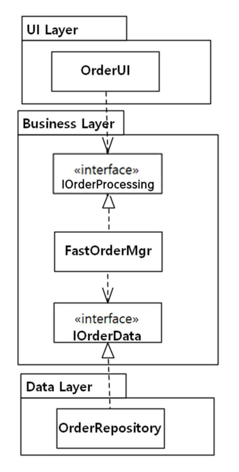
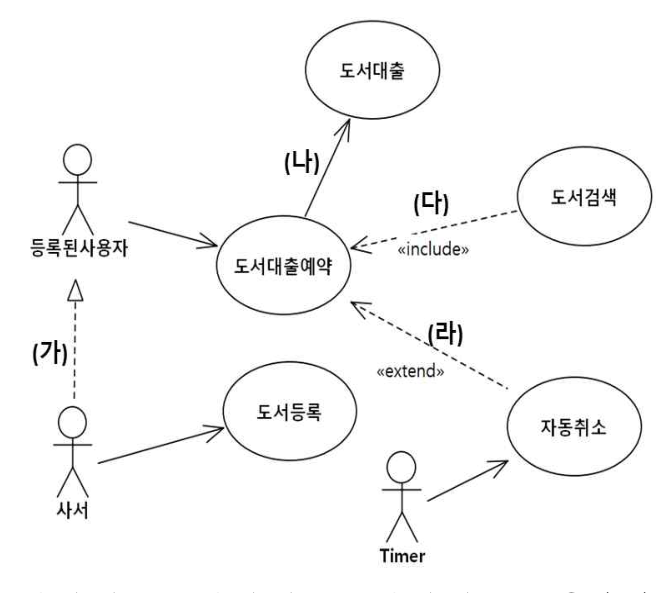
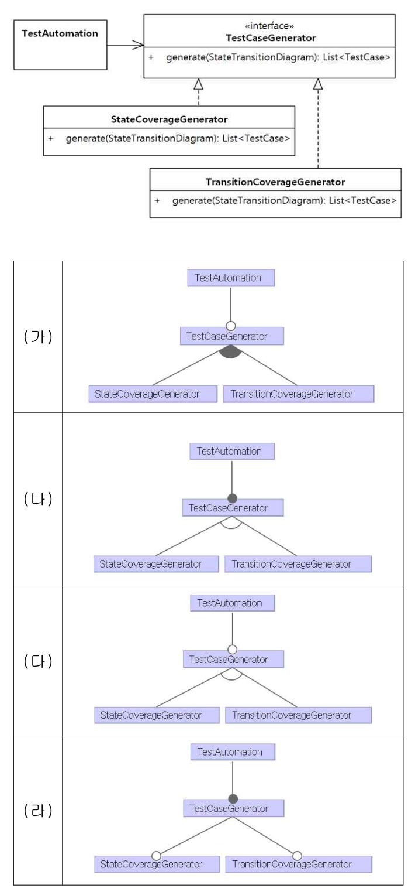
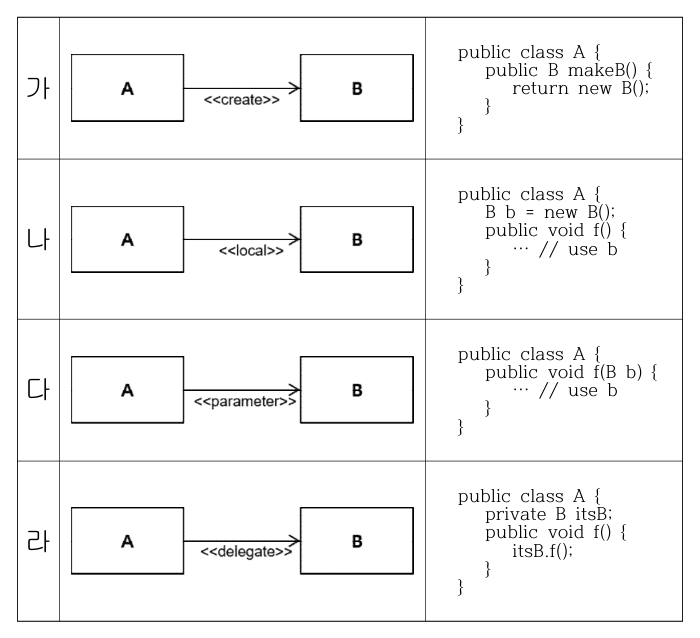
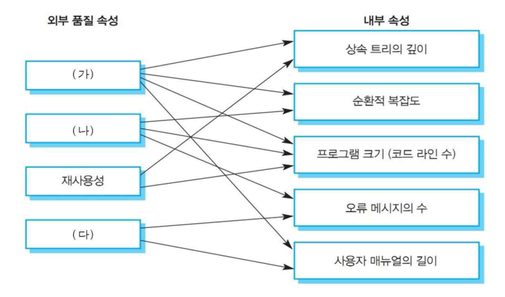
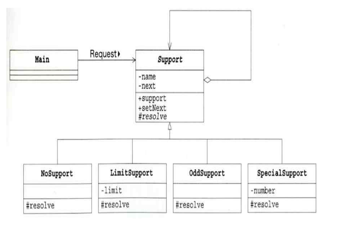
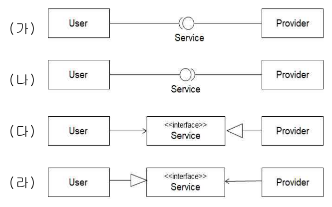

작성 기준: 업로드된 소프트웨어공학 강의자료(Part I~III, [1]1. SW 공학) 우선 근거, 외부지식은 보조적으로만 사용(강의자료 미수록 항목은 각 문항에 명시)
정답 출처: 2019년(제20회) 정보시스템 감리사 필기시험 문제 및 답안.pdf (원본 Bold 표시 정답 - 페이지 렌더 이미지 직접 대조 확인)
정답 신뢰도: 매우 높음 (stroke-text 자동추출 25/25 + 보기 영역 렌더 확대 육안 대조 25/25 일치, 계산·코드 문항은 별도 재검산)
기준 버전 주의: 본 회차는 2019년 시행분이다. ITIL V3(43번)·전자정부 표준프레임워크(36번)·ISO/IEC 33063:2015(42번) 등 버전이 명시된 문항은 이후 개정이 있었으므로, 각 문항의 「관련 이론 정리」 말미에 현행(2025년 기준) 변경사항을 병기하였다.
| 번호 | 정답 | 번호 | 정답 | 번호 | 정답 |
|---|---|---|---|---|---|
| 26 | ④ | 36 | ③ | 46 | ③ |
| 27 | ③ | 37 | ④ | 47 | ④ |
| 28 | ② | 38 | ④ | 48 | ③ |
| 29 | ③ | 39 | ① | 49 | ① |
| 30 | ④ | 40 | ③ | 50 | ③ |
| 31 | ② | 41 | ④ | ||
| 32 | ① | 42 | ④ | ||
| 33 | ③ | 43 | ② | ||
| 34 | ② | 44 | ① | ||
| 35 | ② | 45 | ② |
2019년 제20회 소프트웨어공학은 UML·모델링 비중이 유난히 높았던 회차다. 전항정답·복수정답은 없었으나, 그림(다이어그램)을 읽고 판단해야 하는 문항이 7개(29·30·31·35·39·41·44) 로 전체의 28%를 차지해 체감 난이도를 끌어올렸다.
영역별 배분은 ① UML·설계 7문항(29·30·31·35·41·44 + 33), ② 테스트 4문항(27·42·47·50), ③ 애자일 3문항(37·40·45), ④ 품질·프로세스 5문항(26·28·34·39·49), ⑤ 아키텍처·변경용이성 2문항(32·33), ⑥ 표준·프레임워크 3문항(36·43·48), ⑦ 코드 추적 1문항(46) 이다.
이 회차의 특징 세 가지.
첫째, UML 표기법의 정확성을 집요하게 물었다. 30번은 유스케이스 다이어그램에서 include/extend 화살표 방향과 일반화 선 종류가 맞는지, 44번은 인터페이스 제공(lollipop)과 요구(socket) 표기가 맞는지, 35번은 연관관계 스테레오타입(«create»·«local»·«parameter») 이 코드와 일치하는지를 따진다. "대충 그리면 틀린다"는 메시지가 분명하다.
둘째, Robert Martin의 원칙 체계가 두 문항(29 DIP, 33 컴포넌트 응집도 3원칙)에 걸쳐 나왔다. 클래스 수준의 SOLID와 컴포넌트 수준의 REP/CCP/CRP 를 구분해야 한다.
셋째, 계산 문항은 2개(37·40)뿐이고 모두 애자일 속도(velocity) 관련으로 난이도가 낮다. 대신 46번 Java 컬렉션 계층 추적, 50번 커버리지 최소 TC 산정처럼 정확한 지식이 있어야 답이 나오는 문항으로 변별력을 확보했다.
강의자료 커버리지는 UML·디자인 패턴·테스트 영역에서 양호하나, 품질 속성 시나리오(26번)·기술 부채(28번)·feature diagram(31번)·ISO/IEC 33063(42번) 은 업로드된 강의자료에 직접 수록되어 있지 않아 외부지식으로 보완했다.
| 항목 | 내용 |
|---|---|
| 문서명 | 정보시스템 감리사 소프트웨어공학 기출문제 해설집 - 2019년 제20회 |
| 대상 문항 | Q26 ~ Q50 (소프트웨어공학) |
| 원본 출처 | 2019년(제20회) 정보시스템 감리사 필기시험 문제 및 답안.pdf (p.6~11) |
| 정답 확인 방법 | stroke-text(글리프 render mode) 자동추출 + 보기 영역 렌더 확대 육안 대조 (25/25 일치) |
| 특이 문항 | 없음 (전항정답·복수정답 없음) |
| 그림 포함 문항 | 29번 클래스 다이어그램, 30번 유스케이스 다이어그램, 31번 클래스+feature 다이어그램, 35번 연관관계 스테레오타입, 39번 외부-내부 품질속성 관계도, 41번 클래스 다이어그램, 44번 인터페이스 표기 — 모두 이미지 + 서술 전사 병기 |
| 표·코드 제시 문항 | 28·34·36·38·40·41(해설표)·43·45·46·47·50번 — 이미지 대신 마크다운 표/코드블록으로 전사 |
| 근거 강의자료 | SE01 Part I(V1.2), SE02·SE03 Part I(아키텍처), SE04 Part II(디자인·UML), SE05 디자인 패턴, SE06 Part II(SW 개발), SE07 Part III(테스트·유지관리), SE08 Part III(품질관리·비용산정), SE09 [1]1. SW 공학(V1.1) |
| 강의자료 미수록(외부지식 보완) 항목 | 품질 속성 시나리오 6요소(26번), 기술 부채(28번), feature diagram 표기법(31번), 컴포넌트 응집도 3원칙(33번), ISO/IEC 33063 프로세스 그룹(42번) |
| 기준 버전 | 2019년 출제 당시 기준 + 현행(2025년) 개정사항 병기 |
품질 속성 시나리오(quality attribute scenario)는 품질 속성에 대한 요구사항을 명확하게 기술하는 대표적인 방식이다. 다음 중에서 품질 속성 시나리오를 구성하는 항목과 가장 거리가 먼 것은?
① stimulus – response를 유발하기 위한 stimulus를 명시한다.
② response – stimulus에 대하여 요구되는 결과를 명시한다.
③ artifact – stimulus의 대상으로서 response를 산출하는 대상을 명시한다.
④ stakeholder – 해당 품질속성과 밀접한 관련이 있는 이해관계자를 명시한다.
정답 : ④번 (가장 거리가 먼 것)
정답 신뢰도 : 매우 높음 (원본 Bold 확인)
| 항목 | 내용 |
|---|---|
| 연도 | 2019년 (제20회) |
| 과목 | 소프트웨어공학 |
| 문항번호 | 26번 |
| 난이도 | 중 |
| 출제주제 | 아키텍처 - 품질 속성 시나리오(quality attribute scenario) 구성요소 |
아키텍처 품질 속성은 매 회차 1~2문항 출제된다. 논점은 ① 품질 속성 시나리오 구성요소(본 문항), ② 품질속성 전술(tactics) 분류, ③ ATAM 등 평가 방법론이다.
| 연도 | 문항번호 | 핵심개념 |
|---|---|---|
| 2019 | 32 | 변경용이성 전술 |
| 2020 | 34 | 테스트 가능성 전술 |
| 2022 | 28 | 아키텍처 품질속성 |
"소·자·대·환·응·측" = Source · Stimulus · Artifact · Environment · Response · Response measure
stakeholder는 시나리오를 '만드는' 사람이지 시나리오의 '항목'이 아니다.
품질 속성 시나리오는 "가용성이 높아야 한다" 같은 모호한 비기능 요구를 측정 가능한 형태로 바꾸기 위해 SEI가 제안한 6개 항목의 정형 틀이다.
| # | 요소 | 의미 | 예 (가용성) |
|---|---|---|---|
| 1 | Source of stimulus | 자극을 발생시키는 주체 | 내부 하드웨어 |
| 2 | Stimulus | 시스템에 도달하는 사건 | 디스크 장애 발생 |
| 3 | Artifact | 자극을 받는 대상(시스템·컴포넌트) | 스토리지 서브시스템 |
| 4 | Environment | 자극이 발생하는 상황 | 정상 운영 중 |
| 5 | Response | 시스템이 취해야 할 조치 | 이중화 디스크로 자동 전환, 로그 기록 |
| 6 | Response measure | 응답의 정량적 측정 기준 | 30초 이내, 가용성 99.9% 이상 |
보기 ①②③은 각각 stimulus·response·artifact 로 6요소에 정확히 포함된다. 반면 ④ stakeholder(이해관계자) 는 품질 속성 시나리오의 구성요소가 아니다.
이해관계자는 아키텍처 설계 과정에서 품질 속성 요구를 도출하는 주체(예: QAW - Quality Attribute Workshop 참여자)이지, 시나리오 문장을 구성하는 항목은 아니다. 자극을 발생시키는 주체는 stakeholder가 아니라 source of stimulus 라는 별도 요소로 표현한다.
따라서 가장 거리가 먼 것은 ④번.
품질 속성 시나리오의 두 종류
| 종류 | 용도 | 특징 |
|---|---|---|
| 일반 시나리오(general) | 품질속성별 템플릿 | 시스템 무관, 재사용 가능 |
| 구체 시나리오(concrete) | 특정 시스템에 맞춘 인스턴스 | 실제 수치·컴포넌트명 포함 |
시나리오 작성 예 (성능)
[Source] 500명의 동시 사용자가
[Stimulus] 조회 요청을 보낼 때
[Artifact] 민원처리 시스템이
[Environment] 정상 운영 상태에서
[Response] 응답을 반환하되
[Measure] 평균 2초 이내, 95 percentile 3초 이내
아키텍처 평가 방법론과의 연계
| 방법론 | 내용 |
|---|---|
| QAW(Quality Attribute Workshop) | 이해관계자와 함께 품질 속성 시나리오 도출·우선순위화 |
| ATAM(Architecture Tradeoff Analysis Method) | 시나리오 기반으로 아키텍처의 위험·민감점·트레이드오프 분석 |
| CBAM | ATAM에 비용·효익 관점 추가 |
| SAAM | 변경 용이성 중심의 초기 평가 방법 |
이해관계자(stakeholder)의 자리: 이해관계자는 ATAM/QAW의 참여자로서 시나리오를 만드는 쪽에 위치한다. 시나리오 안에 들어가는 항목이 아니라는 점이 본 문항의 핵심이다.
강의자료 수록 여부: 강의자료는 SW 아키텍처의 정의·품질속성·아키텍처 평가를 다루나 품질 속성 시나리오 6요소는 직접 수록되어 있지 않아 외부지식(SEI, Bass 외)으로 보완했다.
비기능 요구사항이 "성능이 우수할 것"처럼 검증 불가능하게 기술되면 감리에서 지적 대상이 된다. 개선 권고는 품질 속성 시나리오 형태로 재작성하는 것이며, 특히 Response Measure(정량 기준) 가 있어야 인수 시험 기준으로 쓸 수 있다.
6요소를 순서대로 외우는 것이 유일한 대비다 — "누가(Source) → 무엇을(Stimulus) → 어디에(Artifact) → 어떤 상황에서(Environment) → 어떻게 반응(Response) → 얼마나(Measure)". 오답으로는 stakeholder, tactic, constraint, risk 같은 아키텍처 관련 용어지만 시나리오 요소가 아닌 것이 등장한다.
시스템에 도달하여 응답을 요구하는 사건이다. 가용성이면 "장애 발생", 성능이면 "요청 도착", 보안이면 "비인가 접근 시도"가 stimulus다. 보기의 서술("response를 유발하기 위한 stimulus")이 정확하다.
자극이 도달했을 때 시스템이 수행해야 할 활동이다. 여기에 정량 기준을 붙인 것이 response measure다. 두 요소를 별개로 센다는 점을 기억할 것.
자극을 받는 대상이다. 전체 시스템일 수도 있고 특정 컴포넌트·데이터 저장소일 수도 있다. 보기의 "stimulus의 대상으로서 response를 산출하는 대상"이라는 서술과 일치한다.
동일한 입력에 대해서 엘리베이터 제어 시스템은 내부 상황에 따라서 다른 동작을 보인다. 예를 들어 "open door" 버튼이 선택된 경우, 엘리베이터가 이동 중이면 무시하여야 하고, 정지 중이면서 문이 닫혀있거나 닫히는 중인 경우에만 문을 열어야 한다. 이와 같은 동작 특성을 가지는 시스템을 테스트할 때의 테스트 설계 기법으로 가장 적절한 기법은?
① 분기(branch) 테스팅
② 경계값 분석(boundary value analysis) 테스팅
③ 상태 전이(state transition) 테스팅
④ 결정표(decision table) 테스팅
정답 : ③번
정답 신뢰도 : 매우 높음 (원본 Bold 확인)
| 항목 | 내용 |
|---|---|
| 연도 | 2019년 (제20회) |
| 과목 | 소프트웨어공학 |
| 문항번호 | 27번 |
| 난이도 | 하 |
| 출제주제 | 테스트 설계 기법 - 상태 전이(state transition) 테스팅 |
테스트 설계 기법은 매 회차 2~3문항 출제된다. "상황 → 적합한 기법 선택" 유형이 절반이고, 나머지는 특정 기법의 계산·적용(페어와이즈 표 채우기, 경계값 도출)이다.
| 연도 | 문항번호 | 핵심개념 |
|---|---|---|
| 2019 | 50 | 문장·분기 커버리지 |
| 2020 | 29 | 페어와이즈 테스트 |
| 2023 | 35 | 경계값 분석 |
"같은 입력인데 결과가 다르다 = 상태가 있다 = 상태 전이 테스팅"
결정표는 조합, 상태 전이는 이력.
문제 지문에서 결정적인 표현은 "동일한 입력에 대해서 … 내부 상황에 따라서 다른 동작을 보인다" 이다. 이것이 바로 상태(state)를 가지는 시스템의 정의이며, 그런 시스템의 테스트 기법이 상태 전이 테스팅이다.
예시를 정리하면 입력은 하나(open door 버튼)인데 결과가 셋으로 갈린다.
| 현재 상태 | 입력 | 동작 |
|---|---|---|
| 이동 중 | open door | 무시 |
| 정지 + 문 닫힘 | open door | 문 열기 |
| 정지 + 문 닫히는 중 | open door | 문 열기 |
동일 이벤트에 대해 현재 상태가 결과를 결정하므로, 테스트 설계는 상태 × 이벤트 조합을 빠짐없이 다루어야 한다. 이를 체계화한 것이 상태 전이 테스팅이며, 상태 전이도나 상태 전이표(state transition table) 로부터 테스트 케이스를 도출한다.
따라서 정답은 ③번.
화이트박스 기법으로, 코드의 각 분기(if/else)의 참·거짓을 모두 실행하는 것이 목표다. 코드 구조를 보는 기법이지 시스템의 상태 개념을 다루지 않는다. 또한 본 문항은 시스템 동작 명세로부터 테스트를 설계하는 블랙박스 상황이다.
입력 값의 유효/무효 경계(최소, 최소+1, 최대-1, 최대)에서 결함이 자주 발생한다는 경험칙에 기반한 기법이다. 수치형 입력 범위가 있을 때 쓰며, 본 문항처럼 상태에 따라 동작이 달라지는 상황과는 무관하다.
여러 조건의 조합과 그에 따른 행위를 표로 정리해 테스트 케이스를 도출한다. 언뜻 적합해 보이지만 결정적 차이가 있다.
| 구분 | 결정표 테스팅 | 상태 전이 테스팅 |
|---|---|---|
| 초점 | 조건들의 조합 (정적) | 시간에 따른 상태 변화 (동적) |
| 이력 | 고려하지 않음 | 이전 상태가 결과를 좌우 |
| 적합 대상 | 업무 규칙, 요금 산정 | 프로토콜, 제어 시스템, 화면 흐름 |
엘리베이터는 "직전에 무슨 일이 있었는가"(이동 중이었는가, 문이 닫히는 중이었는가)가 결과를 바꾸므로 이력이 있는 시스템이다. 결정표는 이력을 표현하지 못한다.
블랙박스 테스트 기법 선택 가이드
| 기법 | 적용 상황 |
|---|---|
| 동등 분할(equivalence partitioning) | 입력을 같은 동작을 하는 그룹으로 나눌 수 있을 때 |
| 경계값 분석 | 입력에 수치 범위가 있을 때 |
| 상태 전이 | 상태를 가지며 이력에 따라 동작이 달라질 때 |
| 결정표 | 다중 조건의 조합으로 행위가 결정될 때 |
| 페어와이즈 | 인자·수준이 많아 전수 조합이 불가할 때 |
| 유스케이스 테스팅 | 사용자 시나리오 흐름 검증 |
| 분류 트리 | 테스트 대상을 계층적으로 분해할 때 |
상태 전이 테스팅의 구성요소
| 요소 | 의미 |
|---|---|
| 상태(State) | 시스템이 머무는 조건 (이동 중, 정지, 문 열림…) |
| 이벤트(Event) | 전이를 촉발하는 입력 (버튼 누름, 타이머 만료) |
| 전이(Transition) | 상태 A → 상태 B 로의 이동 |
| 액션(Action) | 전이 시 수행되는 동작 |
| 가드(Guard) | 전이 조건 |
N-switch 커버리지
| 커버리지 | 의미 |
|---|---|
| 0-switch | 모든 단일 전이를 1회 이상 실행 |
| 1-switch | 연속된 2개 전이 쌍을 모두 실행 |
| N-switch | 연속된 N+1개 전이 시퀀스 |
무효 전이(invalid transition) 테스트
정상 전이뿐 아니라 "일어나서는 안 되는 전이"(예: 이동 중에 문이 열림)도 테스트해야 한다. 상태 전이표에서 빈칸으로 남는 칸이 그 대상이며, 안전 관련 시스템에서 특히 중요하다.
결재 시스템의 문서 상태(작성중 → 상신 → 검토 → 승인/반려 → 회수), 주문 상태(접수 → 결제 → 배송 → 완료/취소)가 전형적인 적용처다. 감리에서는 "상태 전이도가 설계 산출물에 존재하는가", "무효 전이(예: 승인 후 다시 작성중으로 되돌아감)를 차단하는 검증 로직이 있는가" 를 점검한다.
블랙박스 기법 선택 문항은 지문의 한 구절로 갈린다.
- "동일 입력, 상황(상태)에 따라 다른 결과" → 상태 전이
- "여러 조건의 조합" → 결정표
- "범위·경계·최대/최소" → 경계값 분석
- "같은 결과를 내는 입력 그룹" → 동등 분할
다음의 설명에 가장 적절한 개념은 무엇인가?
- 낮은 품질의 소프트웨어가 결국은 미래에 사용자의 니즈를 충족시키는 것을 지연시킨다.
- 비즈니스 이해관계자 및 경영진과 소프트웨어 품질에 대한 의사 소통 시 유용한 비유이다.
① bad smell
② technical debt
③ quality cost
④ software entropy
정답 : ②번
정답 신뢰도 : 매우 높음 (원본 Bold 확인)
| 항목 | 내용 |
|---|---|
| 연도 | 2019년 (제20회) |
| 과목 | 소프트웨어공학 |
| 문항번호 | 28번 |
| 난이도 | 중 |
| 출제주제 | 소프트웨어 품질 - 기술 부채(technical debt) |
소프트웨어 품질 개념어는 매 회차 1문항 정도 나오며, 최근에는 애자일·DevOps 맥락의 신조어(기술 부채, DORA 지표, 리드타임) 비중이 늘고 있다. 형태는 "설명 → 용어 선택"으로 고정적이다.
| 연도 | 문항번호 | 핵심개념 |
|---|---|---|
| 2019 | 47 | 리팩터링 기법(extract method) |
| 2020 | 49 | Lehman 법칙(복잡도 증가) |
| 2023 | 41 | 코드 품질 지표 |
"부채(debt) = 지금 아끼고 나중에 이자까지 갚는다. 경영진과 말이 통하는 비유."
bad smell(징후) → technical debt(비용) → refactoring(상환)
지문의 두 문장 중 두 번째가 결정적이다.
"비즈니스 이해관계자 및 경영진과 소프트웨어 품질에 대한 의사 소통 시 유용한 비유이다."
비유(metaphor) 라는 단어가 명시되어 있다. 보기 네 개 중 금융 개념을 빌려 온 비유는 technical debt(기술 부채) 뿐이다.
Ward Cunningham이 1992년 제안한 이 개념의 요지는 이렇다.
첫 번째 문장 "낮은 품질의 소프트웨어가 결국은 미래에 사용자의 니즈를 충족시키는 것을 지연시킨다" 가 바로 이자 부담으로 인한 향후 기능 인도 지연을 서술한 것이다.
경영진은 코드 품질 지표(순환복잡도·중복도)를 이해하기 어렵지만 "부채와 이자" 라는 말은 즉시 이해한다. 이것이 이 개념이 널리 쓰이는 이유이며, 지문이 "의사 소통에 유용한 비유"라고 강조한 지점이다.
Martin Fowler·Kent Beck이 정의한 코드 냄새 — 리팩터링이 필요함을 시사하는 코드상의 징후다(중복 코드, 긴 메서드, 큰 클래스, 기능 편애, 산탄총 수술 등).
기술 부채와의 관계: bad smell은 부채의 증상(징후) 이고, technical debt는 그 증상들이 누적되어 발생하는 비용 개념이다. 즉 층위가 다르다. 또한 bad smell은 개발자 간 소통 용어이지 경영진과의 소통 비유가 아니다.
품질 비용 — 품질 확보와 관련된 모든 비용을 분류한 회계적 개념이다.
| 분류 | 세부 | 예 |
|---|---|---|
| 적합 비용(conformance) | 예방 비용 | 교육, 표준 수립, 설계 리뷰 |
| 평가 비용 | 검사, 테스트, 감사 | |
| 비적합 비용(nonconformance) | 내부 실패 비용 | 출시 전 발견된 결함 수정 |
| 외부 실패 비용 | 출시 후 장애, 배상, 신뢰 상실 |
실재하는 비용의 분류 체계이지 비유가 아니다. 지문의 "비유" 단서와 맞지 않는다.
소프트웨어 엔트로피 — 열역학의 엔트로피를 빌려, "소프트웨어는 수정을 거듭할수록 무질서도(복잡도)가 증가한다" 는 개념이다. Lehman의 복잡도 증가의 법칙과 통한다.
이것도 비유이긴 하지만 물리학 비유이고, 지문이 말하는 "경영진과의 소통에 유용한" 성격과는 거리가 있다(엔트로피는 경영진에게 더 어려운 개념이다). 또한 엔트로피는 현상의 서술이지, 지문처럼 "미래의 니즈 충족을 지연시킨다" 는 비용·기회손실 관점을 담지 않는다.
④와 ②의 갈림길: "복잡도가 늘어난다"에 방점이 있으면 엔트로피, "그래서 앞으로 비용을 치러야 한다" 에 방점이 있으면 기술 부채다. 지문은 후자다.
기술 부채의 4분면 (Martin Fowler)
| 신중함(Prudent) | 무모함(Reckless) | |
|---|---|---|
| 의도적(Deliberate) | "지금은 출시하고 나중에 갚자" | "설계할 시간 없어" |
| 비의도적(Inadvertent) | "이제야 어떻게 했어야 하는지 알겠다" | "계층 분리가 뭐죠?" |
가장 위험한 것은 무모하고 비의도적인 부채(지식 부족으로 쌓이는 부채)다. 반대로 신중하고 의도적인 부채는 전략적으로 관리 가능하다.
기술 부채의 유형
| 유형 | 예 |
|---|---|
| 코드 부채 | 중복, 복잡한 로직, 미준수 코딩 표준 |
| 설계·아키텍처 부채 | 계층 위반, 순환 의존, 잘못된 모듈 경계 |
| 테스트 부채 | 낮은 커버리지, 수동 테스트 의존 |
| 문서 부채 | 설계서-코드 불일치 |
| 인프라·빌드 부채 | 수동 배포, 낡은 라이브러리 |
측정과 관리
- SonarQube 등은 기술 부채를 "수정 소요 시간(remediation effort)" 으로 환산해 제시한다.
- 기술 부채 비율(TD Ratio) = 수정 비용 ÷ 개발 비용.
- 관리 방법: 부채 백로그 등재 → 스프린트 용량의 일정 비율(보통 10~20%)을 상환에 배정.
강의자료 수록 여부: 강의자료는 리팩터링·코드 품질을 다루나 기술 부채 개념은 직접 수록되어 있지 않아 외부지식(Ward Cunningham, Martin Fowler)으로 보완했다.
유지보수 사업 착수 시 인수 대상 시스템의 기술 부채를 정적 분석으로 측정해 "인수 후 3개월간 부채 상환에 20% 공수 배정" 같은 계획을 세운다. 감리에서는 예방(preventive) 유지보수 예산의 존재 여부가 곧 부채 상환 의지를 보여 주는 지표이며, 이것이 없으면 시스템 노후화가 가속된다는 점을 지적한다.
네 보기의 층위 차이를 정리해 두면 어떤 조합으로 나와도 풀린다.
| 용어 | 성격 | 한 마디 |
|---|---|---|
| bad smell | 징후 | 리팩터링이 필요한 코드 신호 |
| technical debt | 비용·비유 | 지금 아끼면 나중에 이자까지 갚는다 |
| quality cost | 회계 분류 | 예방·평가·실패 비용 |
| software entropy | 현상·비유 | 고칠수록 무질서해진다 |
다음 클래스 다이어그램은 주문처리 기능에 대한 설계를 보여 준다. 이 클래스 다이어그램에 적용된 설계 원칙으로서 가장 적절한 것은?

(그림 서술 전사) 세 개의 계층 상자 안에 클래스가 배치되어 있다.
| 계층 | 포함 요소 |
|---|---|
| UI Layer | OrderUI |
| Business Layer | «interface» IOrderProcessing / FastOrderMgr / «interface» IOrderData |
| Data Layer | OrderRepository |
연결 관계(위 → 아래 순서)
OrderUI → «interface» IOrderProcessing (사용)FastOrderMgr ⇢△ «interface» IOrderProcessing (실체화, 점선 + 속 빈 삼각형)FastOrderMgr → «interface» IOrderData (사용)OrderRepository ⇢△ «interface» IOrderData (실체화)즉 상위 계층이 하위 계층의 구체 클래스를 직접 참조하지 않고, 그 사이에 인터페이스를 두고 하위 계층이 그 인터페이스를 구현하는 구조다.
① SRP(Single Responsibility Principle)
② ISP(Interface Segregation Principle)
③ DIP(Dependency Inversion Principle)
④ LSP(Liskov Substitution Principle)
정답 : ③번
정답 신뢰도 : 매우 높음 (원본 Bold 확인)
| 항목 | 내용 |
|---|---|
| 연도 | 2019년 (제20회) |
| 과목 | 소프트웨어공학 |
| 문항번호 | 29번 |
| 난이도 | 중 |
| 출제주제 | SOLID 원칙 - DIP(의존성 역전 원칙) 식별 |
SOLID는 매 회차 1~2문항으로 최상위 빈출이다. 형태는 ① 설명 → 원칙 선택, ② 클래스 다이어그램 → 원칙 식별(본 문항), ③ 위반 사례 → 개선 방안 선택이다. DIP는 그중에서도 가장 자주 나온다.
| 연도 | 문항번호 | 핵심개념 |
|---|---|---|
| 2019 | 33 | 컴포넌트 응집도 3원칙 |
| 2021 | 26 | OCP |
| 2024 | 46 | DIP |
"구체 클래스 사이에 인터페이스가 보이면 DIP."
DIP(원칙) → IoC(사상) → DI(기법) 세 층위를 구분할 것.
다이어그램의 구조적 특징은 "구체 클래스 사이에 항상 인터페이스가 끼어 있다" 는 것이다.
만약 DIP를 적용하지 않았다면
OrderUI ──> FastOrderMgr ──> OrderRepository
(고수준) (중간) (저수준)
상위 계층이 하위 계층의 구체 클래스에 직접 의존한다. 이 경우 OrderRepository를 다른 저장소(예: MongoOrderRepository)로 교체하면 FastOrderMgr 코드를 고쳐야 한다.
DIP를 적용한 실제 다이어그램
OrderUI ──> «interface» IOrderProcessing
△ (구현)
FastOrderMgr
│
v
«interface» IOrderData
△ (구현)
OrderRepository
OrderUI(고수준)는 IOrderProcessing이라는 추상(인터페이스) 에만 의존한다.FastOrderMgr(저수준 구현)가 그 인터페이스를 구현한다.FastOrderMgr ↔ IOrderData ↔ OrderRepository 사이에서 반복된다.의존성의 "역전"이 일어나는 지점은 두 번째 쌍이다. 원래라면 FastOrderMgr → OrderRepository 로 화살표가 향해야 하지만, 인터페이스를 두면 OrderRepository가 위쪽 계층이 정의한 IOrderData를 향해 화살표를 그린다. 소스 코드 의존성 방향이 실행 흐름과 반대로 뒤집히는 것, 이것이 DIP의 이름이 '역전(Inversion)'인 이유다.
따라서 적용된 원칙은 ③ DIP.
"클래스는 변경되어야 할 이유가 하나여야 한다." 하나의 클래스 내부의 응집도를 다루는 원칙이다. 다이어그램은 클래스 각각의 책임 구성이 아니라 클래스 사이의 의존 방향을 보여 주므로 SRP의 관심사가 아니다.
"클라이언트는 자신이 사용하지 않는 메서드에 의존하지 않아야 한다." 즉 뚱뚱한 인터페이스를 여러 개의 작은 인터페이스로 쪼개는 원칙이다.
인터페이스가 두 개(IOrderProcessing, IOrderData) 등장하므로 ISP처럼 보일 수 있으나, 두 인터페이스는 서로 다른 계층 경계에 놓인 것이지 하나의 큰 인터페이스를 쪼갠 결과가 아니다. ISP라면 예컨대 IOrderData가 IOrderReader와 IOrderWriter로 분리된 모습이어야 한다.
"자식 타입은 부모 타입을 대체할 수 있어야 한다." 상속 계층의 의미적 정합성을 다룬다. 다이어그램에는 클래스 간 상속(일반화)이 없고 인터페이스 실체화(realization)만 있으므로 LSP의 판단 대상이 아니다.
SOLID 5원칙
| 약어 | 원칙 | 한 문장 | 판별 단서 |
|---|---|---|---|
| SRP | 단일 책임 | 클래스의 변경 이유는 하나 | 한 클래스가 여러 일을 함 |
| OCP | 개방-폐쇄 | 확장에 열림, 수정에 닫힘 | 새 기능 추가 시 기존 코드 미변경 |
| LSP | 리스코프 치환 | 자식은 부모를 대체 가능 | 상속 관계 |
| ISP | 인터페이스 분리 | 쓰지 않는 메서드에 의존 금지 | 큰 인터페이스 쪼개기 |
| DIP | 의존성 역전 | 추상에 의존, 구체에 의존 금지 | 구체 클래스 사이에 인터페이스 |
DIP의 두 가지 규칙
1. 고수준 모듈은 저수준 모듈에 의존해서는 안 된다. 둘 다 추상화에 의존해야 한다.
2. 추상화는 세부사항에 의존해서는 안 된다. 세부사항이 추상화에 의존해야 한다.
DIP와 IoC/DI의 관계
| 용어 | 층위 |
|---|---|
| DIP | 설계 원칙 (무엇을 지향할 것인가) |
| IoC(제어의 역전) | 패턴/사상 (제어 흐름을 프레임워크가 가짐) |
| DI(의존성 주입) | 구현 기법 (생성자·세터·필드로 의존 객체 주입) |
Spring의 @Autowired는 DI라는 기법으로 DIP라는 원칙을 실현한다. 세 용어를 구분해 묻는 문항이 자주 출제된다.
클린 아키텍처와의 연결
Robert Martin의 클린 아키텍처에서 "의존성은 항상 안쪽(고수준)으로만 향한다"는 규칙을 물리적으로 가능하게 하는 장치가 바로 DIP다. 본 다이어그램의 3계층 구조가 그 축소판이다.
전자정부 표준프레임워크의 Controller-Service-DAO 구조에서 Service가 DAO 인터페이스에 의존하고 구현체는 스프링 컨테이너가 주입하는 것이 DIP의 표준 적용이다. 설계 감리에서는 "Service 클래스가 new XxxDAO() 로 구현체를 직접 생성하고 있지 않은가", "DB 벤더 종속 타입이 업무 계층에 노출되지 않았는가" 를 점검한다.
다이어그램 기반 SOLID 문항은 그림의 시각적 특징으로 즉시 판별된다.
- 구체 클래스 사이에 «interface»가 끼어 있다 → DIP
- 큰 인터페이스가 여러 개로 쪼개져 있다 → ISP
- 상속(일반화) 계층이 그려져 있다 → LSP
- 한 클래스에 성격이 다른 메서드가 잔뜩 → SRP
- 새 구현 클래스를 추가해도 기존 클래스가 안 바뀜 → OCP
다음 유스케이스 다이어그램은 도서관 시스템에 대한 간략한 기능을 보여준다. 이 유스케이스 다이어그램에 표시된 관계 중에서 가장 적절하게 사용되고 있는 것은?

(그림 서술 전사)
| 라벨 | 연결 | 표기 |
|---|---|---|
| (가) | 사서 → 등록된사용자 | 점선 + 속 빈 삼각형 (액터 간) |
| (나) | 도서대출예약 → 도서대출 | 실선 + 열린 화살표 (유스케이스 간) |
| (다) | 도서검색 → 도서대출예약 | 점선 화살표, «include» (화살표가 도서대출예약을 향함) |
| (라) | 자동취소 → 도서대출예약 | 점선 화살표, «extend» (화살표가 도서대출예약을 향함) |
그 밖의 연결: 등록된사용자 → 도서대출예약(연관), 사서 → 도서등록(연관), Timer → 자동취소(연관).
① (가)
② (나)
③ (다)
④ (라)
정답 : ④번
정답 신뢰도 : 매우 높음 (원본 Bold 확인 + 400dpi 확대 표기 재확인)
| 항목 | 내용 |
|---|---|
| 연도 | 2019년 (제20회) |
| 과목 | 소프트웨어공학 |
| 문항번호 | 30번 |
| 난이도 | 상 |
| 출제주제 | UML 유스케이스 다이어그램 - include / extend / 일반화 표기의 적정성 |
UML 다이어그램 판독은 매 회차 2~3문항 출제된다. 2019년 회차는 유스케이스(30번)·클래스(29·31·41·44번)·연관관계 스테레오타입(35번)까지 폭넓게 다루었다. 표기의 적정성을 묻는 형태가 최근 늘고 있다.
| 연도 | 문항번호 | 핵심개념 |
|---|---|---|
| 2019 | 44 | 인터페이스 제공·요구 표기 |
| 2022 | 29 | UML 관계 표기 |
| 2024 | 32 | 유스케이스 include/extend |
"include는 기본에서 나가고(→포함), extend는 기본으로 들어온다(확장→)."
일반화 = 실선 + 속 빈 삼각형 / 실체화 = 점선 + 속 빈 삼각형.
유스케이스끼리 실선 연관은 금지.
네 관계를 UML 표준에 비추어 하나씩 검증한다.
(가) 사서 ⇢△ 등록된사용자 — 부적절
액터 간 일반화(generalization) 를 의도한 표기다. 그러나 일반화는 실선 + 속 빈 삼각형이어야 한다. 그림은 점선 + 속 빈 삼각형으로, 이는 실체화(realization) 표기다. 액터 사이에 실체화 관계는 성립하지 않는다. → 선의 종류가 틀림
(나) 도서대출예약 → 도서대출 — 부적절
유스케이스 두 개를 실선 열린 화살표(연관) 로 직접 이었다. UML에서 유스케이스 사이에 허용되는 관계는 «include», «extend», 일반화 세 가지뿐이다. 연관(association)은 액터와 유스케이스 사이에만 쓴다. → 허용되지 않는 관계
(다) 도서검색 ⇢«include»→ 도서대출예약 — 부적절
«include»는 기본 유스케이스가 포함 유스케이스를 반드시 수행한다는 의미이며, 화살표는 기본 → 포함 방향이다.
(라) 자동취소 ⇢«extend»→ 도서대출예약 — 적절 ✓
«extend»는 확장 유스케이스가 기본 유스케이스의 특정 지점에서 선택적으로 추가 동작을 제공한다는 의미이며, 화살표는 확장 → 기본 방향이다.
Timer가 자동취소를 촉발하는 연관도 자연스럽다.따라서 가장 적절하게 사용된 것은 ④ (라).
액터 일반화는 실선 + 속 빈 삼각형. 그림은 점선이므로 오표기. (내용상 "사서도 등록된사용자의 기능을 수행할 수 있다"는 일반화 의도 자체는 타당하나, 표기가 틀렸다.)
유스케이스 간 연관(association) 은 UML에서 정의되지 않는다. 두 유스케이스가 순차적으로 일어난다는 것을 표현하고 싶다면 유스케이스 다이어그램이 아니라 액티비티 다이어그램·시퀀스 다이어그램을 써야 한다.
«include» 화살표 방향 반대. 이 문항에서 가장 많이 틀리는 보기다. include와 extend의 방향이 서로 반대라는 사실을 정확히 기억해야 한다.
유스케이스 관계 3종 정리
| 관계 | 표기 | 화살표 방향 | 의미 | 실행 |
|---|---|---|---|---|
| «include» | 점선 + 열린 화살표 | 기본 → 포함 | 기본이 포함을 반드시 사용 | 필수 |
| «extend» | 점선 + 열린 화살표 | 확장 → 기본 | 확장이 기본에 선택적 추가 | 선택(조건부) |
| 일반화 | 실선 + 속 빈 삼각형 | 자식 → 부모 | 자식이 부모를 특수화 | - |
[기본] ⇢ «include» ⇢ [포함] (기본이 포함을 부른다)
[확장] ⇢ «extend» ⇢ [기본] (확장이 기본에 붙는다)
외우는 법: "include는 나가고, extend는 들어온다." 화살표가 기본 유스케이스를 향하면 extend, 기본에서 출발하면 include다.
«extend»의 부속 개념
| 개념 | 설명 |
|---|---|
| 확장점(extension point) | 기본 유스케이스에서 확장이 삽입되는 위치 |
| 조건(condition) | {조건} 으로 확장 발생 조건 명시 |
UML 선 종류 총정리 (혼동 방지)
| 관계 | 선 | 화살촉 |
|---|---|---|
| 연관(association) | 실선 | 없음/열린 화살표 |
| 일반화(generalization) | 실선 | 속 빈 삼각형 |
| 실체화(realization) | 점선 | 속 빈 삼각형 |
| 의존(dependency) | 점선 | 열린 화살표 |
| 집합(aggregation) | 실선 | 속 빈 마름모 |
| 합성(composition) | 실선 | 채운 마름모 |
본 문항의 (가)가 틀린 이유가 이 표에 있다 — 점선 + 속 빈 삼각형 = 실체화이지 일반화가 아니다.
요구정의단계 감리에서 유스케이스 모델을 점검할 때 가장 흔한 지적이 include/extend 오용이다. 대표 사례는 ① 단순 순차 흐름을 include로 이어 붙이기, ② 예외 처리를 모두 extend로 남발, ③ 방향 반대로 그리기다. 유스케이스 다이어그램은 기능 범위(scope) 합의 도구이므로, 관계를 잘못 그리면 범위 오해로 이어져 과업 분쟁의 씨앗이 된다.
이 유형은 선 종류 + 화살표 방향 두 가지만 본다. 풀이 순서를 고정하자.
1. 액터-액터, 유스케이스-유스케이스 사이인가? → 허용 관계인지 확인
2. 선이 실선인가 점선인가? → 일반화(실선) vs 실체화·의존(점선)
3. «include»/«extend» 는 화살표가 어느 쪽을 향하는가?
다음 클래스 다이어그램은 TestAutomation 클래스가 StateCoverageGenerator 또는 TransitionCoverageGenerator를 이용하여 테스트케이스를 자동 생성하는 모습을 보여 준다. 이 설계와 가장 밀접한 관계가 있는 feature diagram은?

(그림 서술 전사)
[상단 클래스 다이어그램]
- TestAutomation → «interface» TestCaseGenerator (generate(StateTransitionDiagram): List<TestCase>)
- StateCoverageGenerator ⇢△ TestCaseGenerator (실체화)
- TransitionCoverageGenerator ⇢△ TestCaseGenerator (실체화)
[하단 feature diagram 4종] — 모두 TestAutomation — TestCaseGenerator — (StateCoverageGenerator, TransitionCoverageGenerator) 트리 구조이며, 표기만 다르다.
| 라벨 | TestCaseGenerator 노드 | 두 자식 사이 |
|---|---|---|
| (가) | 속 빈 원(선택 optional) | 채워진 부채꼴 (Or, 하나 이상) |
| (나) | 채워진 원(필수 mandatory) | 속 빈 부채꼴 (Alternative, 정확히 하나) |
| (다) | 속 빈 원(선택) | 속 빈 부채꼴 (Alternative) |
| (라) | 채워진 원(필수) | 부채꼴 없음, 각 자식에 속 빈 원(각각 선택) |
① (가)
② (나)
③ (다)
④ (라)
정답 : ②번
정답 신뢰도 : 매우 높음 (원본 Bold 확인 + 400dpi 확대 표기 재확인)
| 항목 | 내용 |
|---|---|
| 연도 | 2019년 (제20회) |
| 과목 | 소프트웨어공학 |
| 문항번호 | 31번 |
| 난이도 | 상 |
| 출제주제 | 소프트웨어 제품라인 - feature diagram(가변성 표기) |
제품라인·가변성 모델링은 저빈도(4~5년 주기)지만, 출제되면 표기 기호 판별로 고정된다. 클래스 다이어그램과 짝지어 "설계 ↔ 모델 대응"을 묻는 본 문항 형태가 대표적이다.
| 연도 | 문항번호 | 핵심개념 |
|---|---|---|
| 2019 | 29 | DIP(인터페이스 기반 설계) |
| 2019 | 44 | 인터페이스 제공·요구 표기 |
"원 채움=필수, 원 빔=선택 / 부채꼴 빔=택1(XOR), 부채꼴 채움=하나 이상(OR)"
본 문항: 인터페이스는 필수(채운 원) + 구현체는 택 1(빈 부채꼴) = (나)
1단계 — 클래스 다이어그램이 표현하는 가변성을 읽는다.
| 사실 | 클래스 다이어그램의 근거 | feature 관점 해석 |
|---|---|---|
TestAutomation은 TestCaseGenerator를 반드시 사용한다 |
인터페이스를 직접 참조(생략 불가) | mandatory(필수) |
구현체는 StateCoverageGenerator 또는 TransitionCoverageGenerator 중 하나 |
문제 지문에 "또는", 실행 시 하나의 구현체가 주입됨 | alternative(XOR) |
2단계 — 두 조건을 만족하는 표기를 고른다.
| 라벨 | TestCaseGenerator | 자식 관계 | 판정 |
|---|---|---|---|
| (가) | 속 빈 원 = 선택 ✗ | 채워진 부채꼴 = Or(하나 이상) ✗ | 부적합 |
| (나) | 채워진 원 = 필수 ✓ | 속 빈 부채꼴 = Alternative(하나) ✓ | 적합 |
| (다) | 속 빈 원 = 선택 ✗ | 속 빈 부채꼴 ✓ | 부적합 |
| (라) | 채워진 원 ✓ | 부채꼴 없이 각 자식이 개별 optional ✗ (둘 다 선택 안 하거나 둘 다 선택 가능) | 부적합 |
(나)만 "필수 + 정확히 하나 선택" 을 표현한다 → 정답 ②
두 곳 모두 틀렸다. 속 빈 원은 TestCaseGenerator 자체를 안 쓸 수도 있다는 뜻인데, 클래스 다이어그램상 TestAutomation은 이 인터페이스에 의존하므로 생략 불가다. 또 채워진 부채꼴(Or) 은 두 생성기를 동시에 선택할 수도 있다는 의미여서 "또는(택 1)"과 어긋난다.
자식 관계(속 빈 부채꼴 = alternative)는 맞다. 그러나 TestCaseGenerator가 속 빈 원(optional) 이라 "테스트케이스 생성기를 아예 쓰지 않는 구성"도 허용하게 된다. (나)와 단 하나의 표기 차이로 갈리는 최유력 오답이다.
TestCaseGenerator는 필수(채워진 원)로 맞지만, 두 자식이 각각 독립적인 optional 로 표기되었다. 이 경우 둘 다 선택하지 않는 구성(생성기 없이 인터페이스만 존재)이나 둘 다 선택하는 구성이 모두 허용되어 "택 1" 제약을 표현하지 못한다.
feature diagram 표기법 (FODA / FeatureIDE 계열)
| 표기 | 의미 | 제약 |
|---|---|---|
| ● 채워진 원 | mandatory(필수) | 부모가 선택되면 반드시 포함 |
| ○ 속 빈 원 | optional(선택) | 포함해도 되고 안 해도 됨 |
| ◠ 속 빈 부채꼴 | alternative (XOR) | 자식 중 정확히 하나 |
| ◖ 채워진 부채꼴 | or | 자식 중 하나 이상 |
| 점선 화살표 | requires / excludes | 교차 트리 제약(cross-tree constraint) |
Parent Parent Parent
|● | |
Child ┌──◠──┐ ┌──◖──┐
(필수) A B A B
(택 1: XOR) (하나 이상: OR)
소프트웨어 제품라인(SPL)과 feature model
| 개념 | 설명 |
|---|---|
| 공통성(commonality) | 제품군 전체가 공유하는 기능 → mandatory |
| 가변성(variability) | 제품마다 달라지는 기능 → optional / alternative / or |
| feature model | 공통성과 가변성을 트리로 표현한 모델 |
| 제품 구성(configuration) | feature model에서 유효한 조합 하나를 선택한 것 |
클래스 다이어그램의 가변성 실현 기법 ↔ feature 표기
| 설계 기법 | feature 표기 |
|---|---|
| 인터페이스 + 다수 구현체 중 하나 주입 | alternative(XOR) |
| 플러그인 목록에 여러 개 등록 가능 | or |
| 기능을 켜고 끄는 토글 | optional |
| 모든 제품에 포함되는 코어 | mandatory |
강의자료 수록 여부: 강의자료는 UML·아키텍처·재사용을 다루나 feature diagram 표기법과 소프트웨어 제품라인은 직접 수록되어 있지 않아 외부지식(FODA, SPL 공학)으로 보완했다.
동일 솔루션을 여러 지자체·기관에 공급하는 패키지 사업에서 기관별 기능 차이를 feature model로 관리한다. 감리에서는 "기관별 커스터마이징이 소스 분기(fork)로 관리되고 있지 않은가" 를 점검하고, 분기가 누적되면 feature 기반 구성 관리(설정 파일·플러그인 구조) 로 전환할 것을 권고한다.
feature diagram 문항은 원과 부채꼴 두 가지 기호만 알면 끝난다.
- 원: 채움 = 필수 / 빔 = 선택
- 부채꼴: 빔 = 택 1(XOR) / 채움 = 하나 이상(OR)
혼동하기 쉬운 지점은 채움/빔의 의미가 원과 부채꼴에서 서로 반대 방향으로 느껴진다는 것이다(원은 채워야 강한 제약, 부채꼴은 비워야 강한 제약). 이 점을 의식적으로 외워 두어야 한다.
사용자 요구사항의 변경 요청 및 플랫폼의 변경을 효율적으로 수용하기 위해서는 아키텍처를 설계하면서 변경용이성(modifiability)을 고려해야 한다. 다음 중에서 변경용이성을 높이기 위하여 적용하는 방법과 가장 거리가 먼 것은?
① 모듈간의 바인딩을 실행시간보다 컴파일 또는 빌드 시점에 함으로써 모듈의 동작을 명확히 하도록 한다.
② 정보은닉 개념을 적용하여 모듈에 대한 명확한 인터페이스를 도입하거나 중재자를 도입하여 모듈간의 의존관계를 감소시킨다.
③ 하나의 모듈이 하나의 명확한 역할을 하며, 하나의 모듈이 여러 역할을 하는 경우 모듈을 분할하도록 한다.
④ 모듈의 크기가 너무 큰 경우 적절하게 작은 크기의 모듈로 분할함으로써 변경 비용을 감소시키도록 한다.
정답 : ①번 (가장 거리가 먼 것)
정답 신뢰도 : 매우 높음 (원본 Bold 확인)
| 항목 | 내용 |
|---|---|
| 연도 | 2019년 (제20회) |
| 과목 | 소프트웨어공학 |
| 문항번호 | 32번 |
| 난이도 | 중 |
| 출제주제 | 아키텍처 - 변경 용이성(modifiability) 향상 방법 |
품질속성 전술은 매 회차 1~2문항 출제된다. 2019년은 변경 용이성(32번), 2020년은 테스트 가능성(34번)으로 품질속성만 바꿔 같은 형태가 반복되었다. "거리가 먼 것" 부정형이 압도적이다.
| 연도 | 문항번호 | 핵심개념 |
|---|---|---|
| 2019 | 26 | 품질 속성 시나리오 |
| 2020 | 34 | 테스트 가능성 전술 |
| 2022 | 28 | 아키텍처 품질속성 전술 |
변경 용이성 4방향 = "작게 · 뭉치게 · 느슨하게 · 늦게"
바인딩은 늦출수록(defer) 좋다 — 컴파일 시점으로 앞당기자는 서술은 반대.
SEI의 변경 용이성 전술은 크게 세 갈래다.
| 전술 그룹 | 내용 | 본 문항 대응 |
|---|---|---|
| 모듈 크기 축소 | 큰 모듈을 분할(split module) | ④ |
| 응집도 증가 | 한 모듈은 한 책임(increase semantic coherence) | ③ |
| 결합도 감소 | 캡슐화, 중개자(intermediary) 사용, 의존성 제한, 추상 공통 서비스 | ② |
| 바인딩 시점 지연 | defer binding — 늦게 결정할수록 유연 | ← ①이 정반대 |
보기 ①은 "바인딩을 실행시간보다 컴파일 또는 빌드 시점에 하자" 고 말한다. 이는 바인딩을 앞당기자(early binding) 는 뜻으로, 변경 용이성 전술인 바인딩 지연(defer binding) 과 정반대 방향이다.
왜 늦은 바인딩이 변경에 유리한가
| 바인딩 시점 | 변경 시 필요한 작업 |
|---|---|
| 컴파일·빌드 시점 | 재컴파일·재빌드·재배포 필요 |
| 배포·설치 시점 | 설정 파일 교체 + 재기동 |
| 실행 시점 | 재시작 없이 교체 가능(플러그인 교체, DI 재구성, 기능 토글) |
즉 늦게 묶을수록 변경 파급 범위가 좁고 비용이 낮다. 보기 ①이 말하는 "모듈의 동작을 명확히 한다"는 것은 성능·예측 가능성 측면의 장점이지 변경 용이성의 장점이 아니다.
따라서 가장 거리가 먼 것은 ①번.
변경 용이성 전술 전체 (SEI)
| 그룹 | 전술 |
|---|---|
| 모듈 크기 축소 | split module |
| 응집도 증가 | increase semantic coherence |
| 결합도 감소 | encapsulate, use an intermediary, restrict dependencies, refactor, abstract common services |
| 바인딩 시점 지연 | defer binding |
바인딩 시점의 스펙트럼
| 시점 | 기법 | 유연성 |
|---|---|---|
| 코딩 시 | 하드코딩 | 최저 |
| 컴파일 시 | 조건부 컴파일, 제네릭 | 낮음 |
| 빌드·링크 시 | 정적 링크, 빌드 프로파일 | 낮음 |
| 배포·설치 시 | 설정 파일, 환경변수 | 중간 |
| 시작(startup) 시 | DI 컨테이너 구성, 플러그인 로딩 | 높음 |
| 실행 시 | 동적 로딩, 기능 토글, 규칙 엔진 | 최고 |
트레이드오프
늦은 바인딩은 변경 용이성을 높이지만 성능 저하·복잡도 증가·디버깅 난이도 상승을 동반한다. 그래서 아키텍처 설계는 항상 트레이드오프이며, ATAM 같은 평가 방법론이 이 지점을 분석한다. 보기 ①의 서술도 "동작을 명확히 한다"는 측면에서는 옳은 말이지만, 문제가 묻는 품질속성이 변경 용이성이므로 답이 된다.
변경 용이성과 관련 원칙의 연결
| 전술 | 대응 원칙·패턴 |
|---|---|
| 응집도 증가 | SRP |
| 캡슐화 | 정보 은닉, OCP |
| 중개자 | Mediator, Facade, 메시지 큐 |
| 의존성 제한 | DIP, 계층형 아키텍처 |
| 바인딩 지연 | DI/IoC, 플러그인, 전략(Strategy) 패턴 |
법령 개정이 잦은 공공 시스템에서 요율·기준값을 코드에 하드코딩하면 매번 재배포가 필요하다. 이를 설정 테이블이나 규칙 엔진으로 외부화하는 것이 바인딩 지연의 전형적 적용이다. 설계 감리에서 "자주 바뀌는 값·정책이 소스에 상수로 박혀 있지 않은가" 를 점검하는 근거가 이 전술이다.
품질속성 전술 문항은 "방향이 반대인 보기" 를 찾는 것이 요령이다. 변경 용이성의 4대 방향은 작게(split) · 뭉치게(cohesion) · 느슨하게(coupling) · 늦게(defer binding) 다. 이 중 하나라도 거꾸로 서술된 보기가 정답(=거리가 먼 것)이다.
결합도 감소(reduce coupling) 전술 그룹에 정확히 해당한다.
- 정보은닉/캡슐화: 내부 구현을 감추고 인터페이스만 노출 → 내부 변경이 외부로 전파되지 않음
- 중재자(intermediary) 도입: 모듈이 서로 직접 참조하지 않게 함 → Mediator 패턴(2020년 41번과 연결), 이벤트 버스, 메시지 브로커
응집도 증가(increase semantic coherence) 전술이며, SOLID의 SRP와 같은 취지다. 한 모듈이 여러 책임을 지면 변경 이유가 여러 개가 되어 한쪽 변경이 다른 쪽에 영향을 준다.
모듈 크기 축소(split module) 전술이다. 모듈이 크면 그 안의 어떤 것이 바뀌어도 모듈 전체가 영향 범위가 되고, 재컴파일·재테스트 비용이 커진다.
Robert Martin은 clean architecture를 설명하면서 컴포넌트 응집도에 대한 3가지 원칙을 제시하였다. 다음 중에서 제시된 컴포넌트 응집도와 거리가 가장 먼 것은?
① REP(The Reuse/Release Equivalence Principle)
② CCP(The Common Closure Principle)
③ SCP(The Single Change Principle)
④ CRP(The Common Reuse Principle)
정답 : ③번 (거리가 가장 먼 것 = 존재하지 않는 원칙)
정답 신뢰도 : 매우 높음 (원본 Bold 확인)
| 항목 | 내용 |
|---|---|
| 연도 | 2019년 (제20회) |
| 과목 | 소프트웨어공학 |
| 문항번호 | 33번 |
| 난이도 | 중 |
| 출제주제 | 컴포넌트 응집도 3원칙 (Robert Martin) |
Robert Martin의 원칙 체계는 SOLID(클래스) 중심으로 매 회차 출제되며, 컴포넌트 원칙은 3~4년 주기로 등장한다. 2019년 회차는 29번(DIP)과 33번(컴포넌트 응집도)을 함께 배치해 두 층위를 구분할 수 있는지를 물었다.
| 연도 | 문항번호 | 핵심개념 |
|---|---|---|
| 2019 | 29 | DIP |
| 2020 | 35 | 클린 아키텍처 계층 |
| 2021 | 26 | OCP |
응집도 3원칙 = REP · CCP · CRP (재사용=릴리스 / 함께 변경 / 함께 재사용)
결합도 3원칙 = ADP · SDP · SAP (순환 금지 / 안정 방향 / 안정=추상)
SCP는 없는 원칙. SRP는 클래스 수준, 그 컴포넌트판이 CCP.
Robert C. Martin은 Clean Architecture 에서 컴포넌트 수준의 원칙을 응집도 3원칙과 결합도 3원칙으로 나누어 제시했다.
컴포넌트 응집도 3원칙 (어떤 클래스를 같은 컴포넌트에 묶을 것인가)
| 약어 | 원칙 | 내용 |
|---|---|---|
| REP | Reuse/Release Equivalence Principle | 재사용 단위 = 릴리스 단위. 함께 재사용되는 것은 함께 릴리스되어야 하며, 버전 번호와 릴리스 노트가 있어야 한다 |
| CCP | Common Closure Principle | 같은 이유로 같은 시점에 변경되는 클래스를 한 컴포넌트에 모은다. 서로 다른 이유로 변경되는 클래스는 분리한다 |
| CRP | Common Reuse Principle | 함께 재사용되지 않는 클래스를 한 컴포넌트에 넣지 마라. 컴포넌트를 의존하면 그 안의 모든 것에 의존하게 되기 때문 |
보기 ①②④가 정확히 이 세 가지다. ③ SCP(The Single Change Principle)는 Martin의 저작에 존재하지 않는 가공 용어다.
혼동을 노린 조어로 보인다 — 클래스 수준의 SRP(Single Responsibility Principle) 와 이름이 비슷하고, CCP의 설명("같은 이유로 변경되는 것을 모은다")이 "단일 변경"처럼 들리기 때문이다. 그러나 그 개념을 담당하는 원칙은 CCP이며 SCP라는 이름은 쓰이지 않는다.
따라서 거리가 가장 먼 것은 ③번.
컴포넌트 6원칙 전체
| 구분 | 원칙 | 내용 |
|---|---|---|
| 응집도 | REP | 재사용 단위 = 릴리스 단위 |
| CCP | 함께 변경되는 것을 모은다 (컴포넌트판 SRP) | |
| CRP | 함께 쓰이지 않는 것을 분리 (컴포넌트판 ISP) | |
| 결합도 | ADP(Acyclic Dependencies Principle) | 컴포넌트 의존 그래프에 순환이 없어야 한다 |
| SDP(Stable Dependencies Principle) | 더 안정적인 방향으로 의존해야 한다 | |
| SAP(Stable Abstractions Principle) | 안정적일수록 추상적이어야 한다 |
응집도 3원칙의 긴장 관계 (Tension Diagram)
세 원칙은 동시에 완벽히 만족할 수 없다.
| 대립 | 내용 |
|---|---|
| REP·CCP ↔ CRP | REP·CCP는 컴포넌트를 크게 만들려 하고, CRP는 작게 쪼개려 한다 |
| CCP를 과하게 지키면 | 불필요한 릴리스가 늘어남(CRP 위반) |
| CRP를 과하게 지키면 | 컴포넌트가 잘게 쪼개져 관리 부담·의존 관계 폭증 |
Martin은 프로젝트 초기에는 CCP(개발 편의·변경 대응)를, 성숙기에는 REP·CRP(재사용성)를 중시하도록 무게중심을 옮기라고 권고한다.
클래스 수준 ↔ 컴포넌트 수준 대응
| 클래스 (SOLID) | 컴포넌트 |
|---|---|
| SRP | CCP |
| ISP | CRP |
| DIP | SDP·SAP |
강의자료 수록 여부: 강의자료는 SOLID(클래스 수준) 를 상세히 다루나 컴포넌트 6원칙은 직접 수록되어 있지 않아 외부지식(Robert C. Martin, Clean Architecture)으로 보완했다.
MSA 전환이나 공통 모듈 라이브러리 설계에서 이 원칙들이 판단 기준이 된다. "공통(common) 모듈"에 성격이 다른 유틸리티를 전부 몰아넣는 것이 대표적인 CRP 위반이며, 그 결과 사소한 변경에도 전체 서비스를 재배포해야 하는 상황이 생긴다. 설계 감리에서 공통 모듈의 의존 그래프에 순환(ADP 위반)이 있는지도 함께 점검한다.
이 유형은 "실재하지 않는 약어" 를 찾는 문제다. 대비법은 6개 약어를 통째로 외우는 것뿐이다 — 응집도 REP·CCP·CRP / 결합도 ADP·SDP·SAP. 오답으로는 SCP, SRP(클래스 수준이라 컴포넌트 원칙이 아님), CIP 같은 조어가 등장한다.
컴포넌트로 묶는 최소 단위는 재사용 가능한 단위여야 하며, 재사용하려면 릴리스(버전 관리) 되어야 한다는 원칙이다. 실무적으로는 "Maven 아티팩트·npm 패키지 단위로 버전을 붙여 배포한다"는 것에 해당한다.
SRP의 컴포넌트 버전이다. SRP가 "클래스는 변경 이유가 하나"라면, CCP는 "컴포넌트는 변경 이유가 하나"다. 요구 변경이 발생했을 때 가능한 한 하나의 컴포넌트만 재배포하면 되도록 묶으라는 뜻이다.
ISP의 컴포넌트 버전이다. ISP가 "쓰지 않는 메서드에 의존하지 마라"면, CRP는 "쓰지 않는 클래스에 의존하지 마라"다. 불필요한 클래스가 섞여 있으면 그 클래스가 바뀔 때마다 무관한 사용자까지 재배포·재검증해야 한다.
다음은 A 회사를 대상으로 CMM/CMMI의 성숙도를 평가하기 위해 평가자들이 파악한 내용들을 간략하게 정리한 것이다. 이 내용을 근거로 이 회사의 성숙도 수준을 평가한 것으로 가장 적절한 것은?
- 소프트웨어 프로세스가 잘 정의되어 있고, 조직이 이를 잘 준수하고 있다.
- 조직 내 별도의 그룹(SEPG) 이 이 프로세스를 전담하며, 개발자들에게 교육을 진행하고 있다.
- 조직에서 정의한 프로세스 표준을 프로젝트 특성에 맞게 테일러링하여 사용하기도 한다.
- 이 프로세스를 기반으로 개발 공정, 비용, 일정, 기능이 통제되고 있다.
① 레벨 2: managed
② 레벨 3: defined
③ 레벨 4: quantitatively managed
④ 레벨 5: optimizing
정답 : ②번
정답 신뢰도 : 매우 높음 (원본 Bold 확인)
| 항목 | 내용 |
|---|---|
| 연도 | 2019년 (제20회) |
| 과목 | 소프트웨어공학 |
| 문항번호 | 34번 |
| 난이도 | 중 |
| 출제주제 | CMMI 성숙도 단계 판정 - 레벨 3(Defined) |
프로세스 품질 모델(CMMI/SPICE)은 2~3년 주기로 출제된다. 형태는 ① 상황 → 레벨 판정(본 문항), ② 레벨별 프로세스 영역 매칭, ③ CMMI vs SPICE 비교(SPICE는 능력수준 0~5의 6단계)다.
| 연도 | 문항번호 | 핵심개념 |
|---|---|---|
| 2019 | 42 | ISO/IEC 33063 테스트 프로세스 |
| 2022 | 47 | CMMI 프로세스 영역 |
| 2024 | 50 | SPICE 능력수준 |
"1 무질서 · 2 프로젝트관리 · 3 조직표준+테일러링 · 4 정량 · 5 최적화"
테일러링이 나오면 레벨 3, 통계가 나오면 레벨 4.
제시된 네 가지 관찰 내용을 CMMI 레벨 판정 기준에 대입한다.
| 관찰 내용 | 대응 레벨 근거 |
|---|---|
| "프로세스가 잘 정의되어 있고 조직이 준수" | Defined의 정의 그 자체 |
| "조직 내 별도 그룹이 전담, 교육 진행" | 레벨 3의 프로세스 영역 OPF/OPD/OT(조직 프로세스 중점·정의·교육훈련) |
| "조직 표준을 프로젝트 특성에 맞게 테일러링" | 레벨 3의 결정적 특징 — 레벨 2에는 조직 표준 자체가 없다 |
| "개발 공정·비용·일정·기능이 통제되고 있다" | 관리(managed) 상태는 레벨 2부터 시작되며 레벨 3에서도 유지 |
레벨 3으로 확정하는 두 개의 결정적 단서
레벨 4·5가 아닌 이유
지문 어디에도 정량적·통계적 관리(관리도, 공정능력지수, 예측 모델)나 지속적 개선·혁신에 대한 언급이 없다. "통제되고 있다"는 표현은 정성적 통제로 읽어야 하며, 레벨 4의 "quantitatively managed"와는 다르다.
따라서 정답은 ② 레벨 3: defined.
프로젝트 단위로 요구관리·계획·형상관리·품질보증이 이루어지지만 조직 표준 프로세스는 없다. 프로젝트마다 방식이 다를 수 있어 "조직 표준을 테일러링한다"는 서술이 성립할 수 없다. 지문에 조직 차원의 표준과 전담 그룹이 명시되었으므로 레벨 2를 넘어섰다.
프로세스 성과를 통계적 기법으로 측정·예측·통제하는 단계다. 판단 근거가 되는 표현은 "측정 지표", "통계적 관리", "공정 능력", "성과 기준선(baseline)", "예측 가능" 등인데 지문에는 전혀 없다.
정량 데이터를 근거로 프로세스를 지속적으로 개선·혁신하는 단계다. "결함 원인 분석 및 해결(CAR)", "조직 성과 관리(OPM)", "신기술 도입을 통한 혁신" 같은 서술이 있어야 한다. 지문은 개선 활동을 언급하지 않는다.
CMMI 성숙도 5단계 (단계적 표현)
| 레벨 | 명칭 | 핵심 특징 | 판별 키워드 |
|---|---|---|---|
| 1 | Initial | 무질서, 개인 역량 의존 | "영웅적 노력", 예측 불가 |
| 2 | Managed | 프로젝트 단위 관리 | 요구관리, 계획, 추적, 형상관리, QA |
| 3 | Defined | 조직 표준 프로세스 + 테일러링 | 표준, 테일러링, SEPG, 교육 |
| 4 | Quantitatively Managed | 정량적·통계적 관리 | 측정, 통계, 성과 기준선, 예측 |
| 5 | Optimizing | 지속적 개선·혁신 | 원인 분석, 개선, 혁신 |
레벨별 대표 프로세스 영역(PA)
| 레벨 | 프로세스 영역 |
|---|---|
| 2 | REQM(요구관리), PP(계획), PMC(모니터링·통제), SAM(공급자계약), MA(측정·분석), PPQA(품질보증), CM(형상관리) |
| 3 | OPF·OPD·OT(조직 프로세스 중점·정의·교육훈련), IPM(통합 프로젝트관리), RSKM(위험관리), RD·TS·PI·VER·VAL(개발), DAR(결정분석) |
| 4 | OPP(조직 프로세스 성과), QPM(정량적 프로젝트관리) |
| 5 | OPM(조직 성과관리), CAR(원인분석·해결) |
연속적 표현(continuous) vs 단계적 표현(staged)
| 구분 | 단계적(staged) | 연속적(continuous) |
|---|---|---|
| 단위 | 조직 전체의 성숙도 레벨 1~5 | 프로세스 영역별 능력도(capability) 0~3 |
| 용도 | 조직 간 비교·인증 | 특정 영역 집중 개선 |
현행(2025년) 기준: CMMI V2.0(2018) 이후 명칭·구조가 개편되어, 프로세스 영역이 실천 영역(Practice Area) 으로 바뀌고 4개 범주(Doing·Managing·Enabling·Improving)로 재편되었다. 다만 성숙도 레벨 1~5의 이름과 취지(Initial·Managed·Defined·Quantitatively Managed·Optimizing)는 그대로 유지되므로 본 문항의 정답은 현행 기준으로도 동일하다.
공공 SW 사업 제안 평가에서 CMMI 레벨 3 인증이 가점 요소로 활용되는 경우가 있다. 감리에서는 인증 보유 여부보다 "제안서에 제시한 방법론이 실제 프로젝트에서 테일러링되어 적용되고 있는가", "방법론 산출물이 형식적으로만 작성되지 않았는가" 를 확인한다. 인증은 있는데 실제 프로세스가 없는 경우가 흔한 지적 사항이다.
CMMI 레벨 판정 문항은 키워드 매칭으로 끝난다.
- "조직 표준 + 테일러링 + SEPG + 교육" → 레벨 3
- "정량적·통계적·측정·예측" → 레벨 4
- "개선·혁신·원인 분석" → 레벨 5
- 조직 언급 없이 프로젝트 관리만 → 레벨 2
특히 레벨 3의 '테일러링' 과 레벨 4의 '정량' 이 판별의 갈림길이다.
다음은 클래스 A와 B 사이에 존재하는 연관관계(association)에 대한 스테레오타입(stereotype)과 이를 코드로 표현한 것이다. 가장 적절하지 않은 것은?

(그림 서술 전사) 각 행에 A ──«스테레오타입»──> B 형태의 클래스 다이어그램과 대응 코드가 나란히 제시된다.
가 — «create»
public class A {
public B makeB() {
return new B();
}
}
나 — «local»
public class A {
B b = new B(); // 클래스 본문에 선언된 '필드'
public void f() {
… // use b
}
}
다 — «parameter»
public class A {
public void f(B b) {
… // use b
}
}
라 — «delegate»
public class A {
private B itsB;
public void f() {
itsB.f();
}
}
① 가
② 나
③ 다
④ 라
정답 : ②번 (가장 적절하지 않은 것)
정답 신뢰도 : 매우 높음 (원본 Bold 확인)
| 항목 | 내용 |
|---|---|
| 연도 | 2019년 (제20회) |
| 과목 | 소프트웨어공학 |
| 문항번호 | 35번 |
| 난이도 | 상 |
| 출제주제 | UML 연관관계 스테레오타입(«create»·«local»·«parameter») ↔ 코드 대응 |
UML 표기 ↔ 코드 대응은 최근 회차에서 비중이 커지는 유형이다. 2019년은 35번(연관 스테레오타입)·44번(인터페이스 제공/요구)로 두 문항이 나왔다. "표기와 코드가 어긋난 것" 을 찾는 부정형이 표준이다.
| 연도 | 문항번호 | 핵심개념 |
|---|---|---|
| 2019 | 30 | 유스케이스 관계 표기 |
| 2019 | 44 | 인터페이스 제공·요구 표기 |
| 2023 | 34 | 클래스 다이어그램 ↔ 코드 |
"create=메서드에서 new / local=메서드 지역변수 / parameter=매개변수 / 필드=지속 연관·위임"
클래스 본문에 선언된 변수는 지역(local)이 아니라 필드다.
이들 스테레오타입은 "A가 B의 참조를 어디에서 얻고 얼마나 오래 유지하는가" 를 구분하는 표기다. 판별 기준은 B 참조의 생존 범위(scope) 다.
| 스테레오타입 | 참조 생존 범위 | 코드 형태 |
|---|---|---|
| «create» | 메서드 내부에서 생성 | new B() 를 메서드 안에서 호출 |
| «local» | 메서드 지역 변수 | void f() { B b = new B(); … } |
| «parameter» | 메서드 매개변수 | void f(B b) { … } |
| (필드 보유) | 객체 생애 전체 | private B itsB; |
보기 ② (나)의 문제점
코드를 보면 B b = new B(); 가 메서드 밖, 클래스 본문에 선언되어 있다.
public class A {
B b = new B(); // ← 인스턴스 필드 (메서드 밖!)
public void f() {
… // use b
}
}
이는 인스턴스 필드(instance field) 로, A 객체가 살아 있는 동안 b 참조가 계속 유지된다. 메서드 실행 중에만 존재하는 지역 변수가 아니다.
따라서 이 코드에 붙어야 할 표기는 «local»이 아니라 일반 연관(association) 또는 필드 보유를 나타내는 표기이며, 굳이 스테레오타입을 쓴다면 «create»(생성자 위치에서 new B() 를 하고 있으므로)에 더 가깝다.
«local» 이 맞으려면 코드가 다음과 같아야 한다.
public class A {
public void f() {
B b = new B(); // ← 메서드 안 지역 변수
… // use b
}
}
따라서 가장 적절하지 않은 것은 ② (나).
참조 획득 방식에 따른 결합도 비교
| 방식 | 결합도 | 테스트 용이성 | 비고 |
|---|---|---|---|
«create» (내부에서 new) |
높음 | 낮음 (교체 불가) | DIP 위반 소지 |
| 필드 + 직접 생성 | 높음 | 낮음 | 본 문항 (나)의 코드 |
| 필드 + 주입(DI) | 낮음 | 높음 | 권장 |
| «parameter» | 낮음 | 높음 | 일시적 사용에 적합 |
| «local» | 중간 | 중간 | 메서드 내부에서만 필요할 때 |
설계 시사점: 보기 (가)와 (나)의 코드는 모두 A가 B를 직접
new하므로 B를 다른 구현으로 교체할 수 없다. 단위 테스트에서 B를 목(mock)으로 바꿀 수도 없다. 이것이 DIP·의존성 주입이 필요한 이유이며, 2019년 29번(DIP)·2020년 34번(테스트 가능성)과 같은 맥락이다.
UML 스테레오타입 일반
| 개념 | 설명 |
|---|---|
| 정의 | UML 기본 요소에 의미를 덧붙이는 확장 메커니즘 |
| 표기 | 길러멧 «…» 안에 이름 |
| 표준 예 | «interface», «abstract», «include», «extend», «use», «realize», «trace» |
| 확장 | 프로파일(profile)로 도메인 특화 스테레오타입 정의 가능 |
UML 확장 메커니즘 3종
| 메커니즘 | 내용 |
|---|---|
| 스테레오타입 | 새로운 의미의 모델 요소 정의 «…» |
| 태그값(tagged value) | 속성 추가 {author=홍길동} |
| 제약(constraint) | 규칙 명시 {ordered}, OCL |
설계서의 클래스 다이어그램과 실제 코드가 어긋나는 것은 감리에서 자주 나오는 지적이다. "설계서상 인터페이스 주입으로 되어 있으나 코드에서는 구현체를 직접 new 하고 있음" 이 대표적이며, 이는 본 문항의 (나)와 정확히 같은 상황이다. 개선 권고는 생성 책임을 DI 컨테이너로 이전하는 것이다.
이 유형은 코드의 선언 위치만 보면 된다.
- new 가 메서드 안 + 반환 → «create»
- 변수 선언이 메서드 안 → «local»
- 변수가 매개변수 목록 → «parameter»
- 변수가 클래스 필드 → 일반 연관 / 위임
본 문항은 필드인데 «local»로 표기한 것을 잡아내는 문제였다. 코드를 볼 때 중괄호의 위치부터 확인하는 습관이 필요하다.
public B makeB() { return new B(); }
메서드 내부에서 B 인스턴스를 생성하여 반환한다. A가 B의 생성 책임을 갖는 관계이므로 «create» 표기가 정확하다. 팩토리 메서드가 전형적인 예다.
public void f(B b) { … }
B를 매개변수로 전달받아 사용한다. A는 B를 생성하지도, 보관하지도 않으며 메서드 호출 동안만 참조한다. «parameter» 표기가 정확하며, 가장 결합도가 낮은 형태다.
private B itsB;
public void f() { itsB.f(); }
A가 B를 필드로 보유하고, 자신의 메서드 호출을 B에게 넘겨(위임) 처리한다. 위임(delegation) 의 표준 구현 형태이므로 표기가 타당하다. (Bridge·Strategy·Proxy 등 여러 패턴의 기반 기법이다.)
전자정부 표준프레임워크 실행환경은 7개 서비스 그룹으로 구성되며 38개 서비스를 제공한다. 다음 중 '업무처리' 서비스 그룹에 포함되는 서비스로 가장 적절한 것은?
| 기호 | 서비스 | 기호 | 서비스 |
|---|---|---|---|
| 가 | scheduling | 라 | job execution |
| 나 | transaction | 마 | process control |
| 다 | exception handling | 바 | sync/async processing |
① 가, 라
② 나, 바
③ 다, 마
④ 라, 바
정답 : ③번
정답 신뢰도 : 매우 높음 (원본 Bold 확인)
| 항목 | 내용 |
|---|---|
| 연도 | 2019년 (제20회) |
| 과목 | 소프트웨어공학 |
| 문항번호 | 36번 |
| 난이도 | 상 |
| 출제주제 | 전자정부 표준프레임워크 실행환경 - '업무처리' 서비스 그룹 |
전자정부 표준프레임워크는 공공 감리 시험 특성상 2~3년 주기로 고정 출제된다. 논점은 ① 실행환경 서비스 그룹 분류(본 문항), ② 4대 환경 구분, ③ 공통컴포넌트 분류(2020년 42번)다.
| 연도 | 문항번호 | 핵심개념 |
|---|---|---|
| 2020 | 42 | 공통컴포넌트 '공통기술 서비스' 분류 |
| 2022 | 43 | 표준프레임워크 실행환경 |
| 2025 | 42 | 표준프레임워크 구성 |
"업무처리 = 흐름 제어(Process Control) + 예외 처리(Exception Handling), 딱 둘."
트랜잭션은 데이터처리, 스케줄링은 공통기술, 잡 실행은 배치처리, 동기/비동기는 연계통합.
여섯 개 서비스를 소속 그룹별로 분류한다.
| 기호 | 서비스 | 소속 서비스 그룹 | 업무처리 여부 |
|---|---|---|---|
| 가 | scheduling | 공통기술 서비스 | X |
| 나 | transaction | 데이터처리 서비스 | X |
| 다 | exception handling | 업무처리 서비스 | O |
| 라 | job execution | 배치처리 서비스 | X |
| 마 | process control | 업무처리 서비스 | O |
| 바 | sync/async processing | 연계통합 서비스 | X |
업무처리 서비스 그룹 = 다(exception handling) + 마(process control) → 정답 ③
업무처리 서비스 그룹의 정체
업무처리(Business Logic) 계층은 업무 로직의 흐름을 제어하고 그 과정에서 발생하는 예외를 일관되게 처리하는 역할을 맡는다. 그래서 이 그룹에는 딱 두 가지가 들어간다.
| 서비스 | 역할 |
|---|---|
| Process Control | 업무 흐름(프로세스) 제어 — 서비스 호출 순서·조건 분기 관리 |
| Exception Handling | 업무 예외의 정의·전파·처리 정책 일원화 |
헷갈리기 쉬운 항목 정리
- transaction(나) — "업무 처리"라는 말과 어감이 맞아 끌리지만, 표준프레임워크에서 트랜잭션은 데이터 접근과 묶여 데이터처리 서비스에 속한다.
- scheduling(가) — 일정 주기 실행은 공통기술 서비스의 부가 기능이다.
- job execution(라) — 대량 일괄 처리는 배치처리 서비스 소관이다.
- sync/async processing(바) — 동기·비동기 호출은 시스템 간 연계 맥락이므로 연계통합 서비스다.
scheduling은 공통기술, job execution은 배치처리다. 둘 다 업무처리가 아니다.
transaction은 데이터처리, sync/async processing은 연계통합이다. transaction을 업무 로직으로 오해하기 쉬운 것이 이 보기의 노림수다.
배치처리 + 연계통합 조합으로 둘 다 아니다.
빠른 판별법: 표준프레임워크 실행환경의 서비스 그룹 이름을 떠올리고 각 단어가 어느 계층의 관심사인지만 매핑하면 된다.
exception handling과process control은 업무 로직 자체의 흐름을 다루고, 나머지 넷은 데이터·배치·연계·공통 기술이라는 별도 관심사다.
표준프레임워크 실행환경 서비스 그룹
| 서비스 그룹 | 주요 서비스 |
|---|---|
| 화면처리 | MVC, UI Adaptor, Ajax Support, Internationalization, Security |
| 업무처리 | Process Control, Exception Handling |
| 데이터처리 | Data Access, DataSource, ORM, Transaction |
| 연계통합 | Integration Service, Naming Service Support, Web Service, Sync/Async Processing |
| 공통기술 | AOP, Cache, Compress/Decompress, Encryption/Decryption, FTP, ID Generation, Logging, Marshalling/Unmarshalling, Object Pooling, Property, Resource, Scheduling, Server Security, String Util, XML Manipulation, File Handling, Excel, Mail |
| 배치처리 | Batch Core, Job Execution(Batch Execution), Batch Support |
| 모바일 화면처리 | 모바일 UI, 디바이스 API 연계 |
"7개 그룹"의 구성: 초기 v1.x는 화면처리·업무처리·데이터처리·연계통합·공통기술 5개였고, 이후 배치처리와 모바일 화면처리가 추가되어 7개가 되었다. 문제가 "7개 서비스 그룹, 38개 서비스"라고 명시한 것은 이 시점의 구성을 가리킨다.
표준프레임워크 4대 환경 (복습)
| 환경 | 역할 |
|---|---|
| 실행환경 | 애플리케이션 실행 기반 (본 문항의 7개 서비스 그룹) |
| 개발환경 | 구현·테스트·배포·형상관리 도구 |
| 운영환경 | 모니터링, 배포관리, 운영관리 |
| 관리환경 | 표준관리, 변경관리, 서비스 요청관리 |
현행(2025년) 기준: 표준프레임워크는 v4.x(Spring Boot 기반, 클라우드 네이티브 대응)로 발전하면서 서비스 구성과 개수가 조정되었다. 다만 실행환경을 서비스 그룹으로 나누고 업무처리 계층이 프로세스 제어·예외 처리를 담당한다는 골격은 유지된다. 시험에서는 문제에 명시된 버전 기준을 따를 것.
공공 사업 설계 감리에서 "업무 로직에 트랜잭션·로깅·예외 처리 코드가 산재해 있는지" 를 점검한다. 표준프레임워크는 이들을 AOP(공통기술)·Transaction(데이터처리)·Exception Handling(업무처리) 으로 분리 제공하므로, 이를 쓰지 않고 각 서비스 클래스에 try-catch를 반복 작성한 경우 개선 권고 대상이다.
표준프레임워크 문항은 "어느 그룹 소속인가" 를 묻는 분류 문제로 고정되어 있다. 최소한 다음 세 가지는 외워 두자.
- 업무처리 = Process Control + Exception Handling (딱 2개)
- Transaction = 데이터처리 (업무처리 아님)
- AOP·캐시·로깅·스케줄링·암호화 = 공통기술 (가장 항목이 많음)
스크럼(scrum) 방법론을 따라 소프트웨어를 개발한다고 하자. 전체 스토리 포인트가 400이고 개발팀의 속도가 25로 추정된다면 해당 릴리스를 완성하기 위해서는 몇 개월의 프로젝트 일정이 필요한가? (단, 한 스프린트는 2주이고, 한 달은 4주라 가정한다.)
① 2개월
② 4개월
③ 6개월
④ 8개월
정답 : ④번
정답 신뢰도 : 매우 높음 (원본 Bold 확인 + 재검산)
| 항목 | 내용 |
|---|---|
| 연도 | 2019년 (제20회) |
| 과목 | 소프트웨어공학 |
| 문항번호 | 37번 |
| 난이도 | 하 |
| 출제주제 | 애자일 - 속도(velocity) 기반 릴리스 일정 산정 |
애자일 계산 문항은 최근 회차마다 1개씩 고정 출제된다. 2019년 37번(속도 주어짐)과 40번(속도를 표에서 산출)이 짝을 이루었고, 2020년 36번은 그림에서 속도를 구하는 상위 버전이었다.
| 연도 | 문항번호 | 핵심개념 |
|---|---|---|
| 2019 | 40 | 속도(velocity) 산출 |
| 2020 | 36 | 릴리스 계획 기반 속도·일정 |
| 2025 | 31 | 속도 기반 잔여 일정 |
400 ÷ 25 = 16 스프린트 → × 2주 = 32주 → ÷ 4 = 8개월
"스프린트 수"와 "주수"를 혼동하지 말 것.
값이 모두 주어져 있으므로 세 번의 나눗셈·곱셈으로 끝난다.
1단계 — 필요한 스프린트 수
400 ÷ 25 = 16 스프린트
2단계 — 총 소요 주수
16 × 2주 = 32주
3단계 — 개월 환산
32주 ÷ 4주 = 8개월
정답 ④
속도 25 포인트/스프린트
→ 400 ÷ 25 = 16 스프린트
→ 16 × 2주 = 32주
→ 32 ÷ 4 = 8개월
2020년 36번과 완전히 동일한 계산 구조이나, 그 문항은 속도를 그림에서 직접 구해야 했고 이 문항은 속도가 주어져 있다. 그래서 난이도가 낮다.
2개월 = 8주 = 4스프린트 = 100포인트. 400포인트에 크게 못 미친다.
4개월 = 16주 = 8스프린트 = 200포인트. "16"이라는 숫자를 스프린트 수가 아니라 주(week) 수로 착각하면 이 값이 나온다. 즉 16주 ÷ 4 = 4개월. 가장 유력한 오답이며, 스프린트 길이(2주)를 곱하는 단계를 빠뜨린 실수다.
6개월 = 24주 = 12스프린트 = 300포인트. 중간값으로 배치된 소거용 보기다.
속도 기반 계획 공식 (재확인)
| 구하는 것 | 공식 |
|---|---|
| 속도 | 완료 스토리 포인트 ÷ 스프린트 수 |
| 필요한 스프린트 수 | 전체(잔여) 포인트 ÷ 속도 |
| 소요 기간 | 스프린트 수 × 스프린트 길이 |
속도 추정 시 유의점
| 항목 | 내용 |
|---|---|
| 초기 불안정 | 첫 2~3 스프린트는 팀 안정화 전이라 신뢰도 낮음 |
| 범위 산정 | 평균 속도 대신 최저~최고 속도 범위로 예측 구간 제시 권장 |
| 팀 간 비교 금지 | 1포인트의 절대 크기가 팀마다 다름 |
| KPI 사용 금지 | 성과 지표로 쓰면 포인트 인플레이션 발생 |
본 문항의 단순화 가정
- 속도가 16 스프린트 내내 일정하게 유지된다고 가정
- 스프린트 간 휴지 기간·릴리스 준비 기간을 고려하지 않음
- 실제 프로젝트라면 버퍼(15~20%) 를 더해 예측한다
참고 — 릴리스 번업으로 표현하면
- x축: 스프린트 1~16
- 완료선: 25씩 증가하여 16회차에 400 도달
- 범위선: 400에서 수평 (범위 변경이 없다는 가정)
애자일 사업의 사업관리 감리에서 "릴리스 예측치의 근거가 무엇인가" 를 확인한다. 속도를 과거 실적이 아닌 희망 수치로 잡아 놓은 계획은 지연 위험이 크다. 반대로 실적 기반 속도가 있고 잔여 백로그 포인트가 관리되고 있으면, 별도 EVM 없이도 진척·완료 예측이 가능하다.
이 유형의 실점 원인은 단위 환산 한 단계 누락이다. 반드시 네 단계를 순서대로 적자.
① 전체 ÷ 속도 = 스프린트 수 → ② × 스프린트 길이(주) = 총 주수 → ③ ÷ 한 달 주수 = 개월
문제에 "한 달은 4주"처럼 가정이 명시되면 반드시 그 값을 사용한다(실제 달력 4.3주가 아니다).
다음은 '항공권 예약 시스템'의 요구사항의 일부를 나열한 것이다. 여기서 비기능 요구사항만을 고른 것으로 가장 적절한 것은?
| 기호 | 요구사항 |
|---|---|
| 가 | 항공편, 탑승객, 예약을 입력하는 방법이 결정되어야 한다. |
| 나 | 여행사와 고객이 데이터베이스에 접근할 때 어떤 정보를 얻을 수 있는지 결정해야 한다. |
| 다 | 시스템은 일주일에 2분 정도의 다운만 허용하며 그 이외에는 항상 사용할 수 있어야 한다. |
| 라 | 티켓에 어떤 정보를 표시할지 결정해야 한다. |
| 마 | 자주 탑승하는 고객을 서비스하기 위하여 시스템을 확장할 수 있어야 한다. |
① 다
② 가, 라
③ 나, 라
④ 다, 마
정답 : ④번
정답 신뢰도 : 매우 높음 (원본 Bold 확인)
| 항목 | 내용 |
|---|---|
| 연도 | 2019년 (제20회) |
| 과목 | 소프트웨어공학 |
| 문항번호 | 38번 |
| 난이도 | 중 |
| 출제주제 | 요구공학 - 기능 요구사항 vs 비기능 요구사항 |
기능/비기능 분류는 요구공학 영역의 기본 문항으로 3~4년 주기로 출제된다. 최근에는 단순 분류보다 국내 공공 요구사항 분류 코드(PER/SER/SCR 등) 를 묻는 형태로 진화하고 있다.
| 연도 | 문항번호 | 핵심개념 |
|---|---|---|
| 2019 | 26 | 품질 속성 시나리오 |
| 2020 | 26 | 요구사항 검증 점검 유형 |
| 2024 | 27 | 비기능 요구사항 분류 |
"무엇을 = 기능 / 얼마나 잘 = 비기능"
가용성(다)·확장성(마) 은 비기능. 입력·조회·표시 항목 정의(가·나·라) 는 기능.
각 항목을 "무엇을 하는가"와 "얼마나 잘 하는가"로 갈라 본다.
| 기호 | 요구사항 | 유형 | 근거 |
|---|---|---|---|
| 가 | 항공편·탑승객·예약을 입력하는 방법 결정 | 기능 | 입력 기능의 정의 |
| 나 | 여행사·고객이 DB 접근 시 얻을 수 있는 정보 결정 | 기능 | 조회 기능·데이터 범위 정의 |
| 다 | 일주일에 2분 다운만 허용, 그 외 항상 사용 가능 | 비기능 | 가용성(availability), 정량 기준 포함 |
| 라 | 티켓에 표시할 정보 결정 | 기능 | 출력 기능·화면 항목 정의 |
| 마 | 고객 증가에 대비해 시스템을 확장 가능 | 비기능 | 확장성(scalability) |
비기능 요구사항 = 다, 마 → 정답 ④
판별 기준 정리
- 가·나·라는 모두 "어떤 데이터를 다루고 어떤 화면을 만들 것인가"를 정하는 것으로, 시스템이 수행할 동작을 규정한다 → 기능 요구사항.
- 다는 "고장 없이 얼마나 오래 서비스되는가"라는 품질 수준을 규정한다. 특히 "일주일에 2분" 이라는 정량 기준이 붙어 가용성 요구임이 명확하다(가용률로 환산하면 약 99.98%).
- 마는 "사용자·부하가 늘어도 대응 가능한가"라는 확장성 요구다. "자주 탑승하는 고객 서비스"는 목적일 뿐, 요구의 본질은 시스템 확장 능력이다.
다만 고르면 마(확장성) 를 놓친 것이다. 확장성이 비기능이라는 점을 확실히 해야 한다. "시스템을 확장할 수 있어야 한다"는 특정 기능의 구현이 아니라 구조적 품질 특성이다.
둘 다 기능 요구사항이다. "입력 방법", "표시할 정보"는 모두 시스템의 동작 정의다.
역시 둘 다 기능 요구사항이다. "접근 시 얻을 수 있는 정보"를 보안(접근 제어) 으로 오독하면 비기능처럼 보일 수 있으나, 지문은 "어떤 정보를 얻을 수 있는지", 즉 조회 결과의 데이터 범위를 정하는 것이므로 기능이다.
함정 주의: 만약 지문이 "여행사와 고객의 접근 권한을 통제해야 한다"였다면 보안 = 비기능이 된다. 한 단어 차이로 유형이 바뀌므로 서술의 초점을 정확히 읽어야 한다.
기능 vs 비기능 요구사항
| 구분 | 기능 요구사항 | 비기능 요구사항 |
|---|---|---|
| 질문 | 무엇을 하는가 | 얼마나 잘 하는가 |
| 예 | 예약 등록, 조회, 취소, 티켓 발권 | 응답 2초 이내, 가용성 99.9%, 동시접속 5천 |
| 검증 | 기능 테스트 | 성능·부하·보안·가용성 테스트 |
| 누락 시 | 기능 부재 | 재구축 수준의 위험 |
비기능 요구사항의 분류 (Sommerville)
| 대분류 | 세부 |
|---|---|
| 제품 요구사항 | 성능, 사용성, 신뢰성·가용성, 보안, 확장성, 이식성, 효율성 |
| 조직 요구사항 | 개발 표준, 구현 언어·도구, 산출물 규격, 인도 일정 |
| 외부 요구사항 | 법·규제(개인정보보호법 등), 상호운용성, 윤리 |
국내 공공 사업의 비기능 요구사항 분류 (요구사항정의서 표준)
| 분류 코드 | 내용 |
|---|---|
| PER | 성능 요구사항 |
| SER | 시스템 장비 구성 요구사항 |
| SFR/QUR | 품질 요구사항 |
| SCR | 보안 요구사항 |
| COR | 제약사항 |
| TER | 테스트 요구사항 |
| INR | 인터페이스 요구사항 |
| DAR | 데이터 요구사항 |
2017년 감리 과목에서 "데이터 요구사항 / 시스템 장비 구성 요구사항 / 품질 요구사항"의 정의를 묻는 문항이 출제된 바 있다. SW공학과 감리 과목이 겹치는 영역이다.
비기능 요구사항 작성의 요건
반드시 정량화·검증 가능해야 한다.
| 나쁜 예 | 좋은 예 |
|---|---|
| "성능이 우수해야 한다" | "동시 사용자 1,000명 기준 평균 응답 2초, 95% 3초 이내" |
| "안정적이어야 한다" | "월간 계획 외 다운타임 10분 이내(가용성 99.98%)" |
본 문항의 다가 좋은 예에 해당한다 — "일주일에 2분"이라는 측정 가능한 기준을 담고 있다.
요구정의단계 감리에서 "비기능 요구사항이 정량 기준 없이 선언적으로만 기술된 경우" 가 최다 지적 사항이다. 정량 기준이 없으면 인수 시험에서 판정할 수 없고, 결국 과업 이행 여부 분쟁으로 이어진다. 특히 가용성·성능·확장성은 아키텍처 설계와 인프라 규모산정의 입력값이므로 요구정의 단계에서 확정되어야 한다.
기능/비기능 분류 문항은 "품질 형용사 + 정량 수치" 를 찾으면 된다.
- 비기능 신호어: 응답 시간, 처리량, 동시 사용자, 가용성, 다운타임, 확장, 보안, 암호화, 백업, 이식, 준수(법령), 사용 편의
- 기능 신호어: 입력한다, 조회한다, 등록·수정·삭제한다, 출력한다, 계산한다, 어떤 정보를 표시할지 결정
다음은 외부 품질 속성과 관련이 있는 내부 속성과의 관계를 나타낸 그림이다. (가), (나), (다)에 들어갈 외부 속성을 가장 바르게 나열한 것은?

(그림 서술 전사)
| 왼쪽(외부 품질 속성) | 오른쪽(내부 속성 = 측정 가능한 메트릭) |
|---|---|
| (가) | 상속 트리의 깊이 (Depth of Inheritance Tree) |
| (나) | 순환적 복잡도 (Cyclomatic Complexity) |
| 재사용성 | 프로그램 크기 (코드 라인 수, LOC) |
| (다) | 오류 메시지의 수 (Number of Error Messages) |
| 사용자 매뉴얼의 길이 (Length of User Manual) |
왼쪽의 각 외부 속성에서 오른쪽의 여러 내부 속성으로 화살표가 다대다로 뻗어 있다. 즉 하나의 외부 속성은 여러 내부 속성으로 추정되며, 하나의 내부 속성도 여러 외부 속성에 영향을 준다.
① (가) 유지보수성 / (나) 신뢰성 / (다) 사용성
② (가) 유지보수성 / (나) 사용성 / (다) 신뢰성
③ (가) 사용성 / (나) 신뢰성 / (다) 유지보수성
④ (가) 신뢰성 / (나) 사용성 / (다) 유지보수성
정답 : ①번
정답 신뢰도 : 매우 높음 (원본 Bold 확인)
| 항목 | 내용 |
|---|---|
| 연도 | 2019년 (제20회) |
| 과목 | 소프트웨어공학 |
| 문항번호 | 39번 |
| 난이도 | 중 |
| 출제주제 | 소프트웨어 측정 - 외부 품질 속성과 내부 속성(메트릭)의 관계 |
소프트웨어 측정·메트릭은 2~3년 주기로 출제된다. 논점은 ① 외부-내부 속성 대응(본 문항), ② CK 메트릭 정의, ③ 특정 지표의 해석(복잡도·결합도)이다.
| 연도 | 문항번호 | 핵심개념 |
|---|---|---|
| 2019 | 28 | 기술 부채 |
| 2020 | 44 | ISO 25010 품질 속성 |
| 2023 | 47 | 품질 메트릭 |
"오류 메시지·매뉴얼 = 사용성 / 순환복잡도 = 신뢰성 / 상속 깊이·크기 = 유지보수성"
외부 속성은 직접 못 재니 내부 속성으로 추정한다.
이 그림은 Sommerville의 소프트웨어 측정(measurement) 절에 나오는 고전적 도해다. 요지는 "사용자가 느끼는 품질(외부)은 직접 잴 수 없으니, 코드에서 잴 수 있는 값(내부)으로 추정한다" 는 것이다.
목록 순서를 이용한 대응
왼쪽 목록은 위에서부터 (가) → (나) → 재사용성 → (다) 이고, 오른쪽 목록은 상속 트리의 깊이 → 순환적 복잡도 → 프로그램 크기 → 오류 메시지의 수 → 사용자 매뉴얼의 길이 순이다. 원 도해는 두 목록을 개념적으로 가까운 것끼리 비슷한 높이에 배치한다.
| 위치 | 외부 속성 | 가장 밀접한 내부 속성 | 근거 |
|---|---|---|---|
| (가) | 유지보수성 | 상속 트리의 깊이, 순환적 복잡도, 프로그램 크기 | 구조가 깊고 복잡하고 클수록 고치기 어렵다 |
| (나) | 신뢰성 | 순환적 복잡도, 프로그램 크기 | 복잡하고 큰 코드일수록 결함 밀도가 높다 |
| (3번째) | 재사용성 | 프로그램 크기, 상속 트리의 깊이 | 크기가 작고 결합이 낮을수록 재사용 쉽다 |
| (다) | 사용성 | 오류 메시지의 수, 사용자 매뉴얼의 길이 | 사용자 대면 요소로 사용 편의를 추정 |
(다)를 사용성으로 확정하는 결정적 근거
오른쪽 목록의 마지막 두 항목 — "오류 메시지의 수", "사용자 매뉴얼의 길이" — 는 코드 구조와 무관한 사용자 대면 지표다. 이 둘로 추정할 수 있는 외부 속성은 사용성(usability) 뿐이다. 매뉴얼이 길수록 배우기 어렵고, 오류 메시지가 많을수록 사용자가 혼란을 겪는다는 추론이다.
(가)와 (나)의 구분
- 상속 트리의 깊이(DIT) 는 객체지향 구조 지표로, 깊을수록 이해·수정이 어렵다 → 유지보수성과 가장 직접적으로 연결된다. 목록 첫 번째에 놓인 (가)가 유지보수성이다.
- 순환적 복잡도는 분기가 많다는 뜻이고, 분기가 많을수록 테스트되지 않은 경로에서 결함이 발생한다 → 신뢰성. (나)가 신뢰성이다.
따라서 (가) 유지보수성 / (나) 신뢰성 / (다) 사용성 = ①번.
(나)와 (다)가 뒤바뀌었다. 사용성이 "순환적 복잡도" 쪽에 배치되는 것은 부자연스럽다. 순환복잡도는 사용자가 체감할 수 없는 내부 구조 지표이며, 사용성은 오류 메시지·매뉴얼 같은 사용자 대면 지표로 추정한다.
목록 첫 번째인 (가)에 사용성을 배치했다. (가)는 상속 트리의 깊이와 가장 가까운 위치인데, 상속 깊이로 사용성을 추정한다는 것은 논리적으로 성립하지 않는다.
(다)를 유지보수성으로 보면, "오류 메시지의 수·사용자 매뉴얼의 길이"로 유지보수성을 추정하게 되어 부자연스럽다. 유지보수성은 코드 구조 지표(복잡도·크기·상속 깊이)로 추정하는 것이 표준이다.
외부 속성 vs 내부 속성
| 구분 | 외부 속성 | 내부 속성 |
|---|---|---|
| 정의 | 시스템을 사용·운영하면서 관찰되는 품질 | 시스템 산출물 자체에서 측정되는 값 |
| 측정 | 직접 측정 곤란(운영 후에야 확인) | 정적 분석으로 즉시 측정 가능 |
| 예 | 유지보수성, 신뢰성, 사용성, 재사용성, 이식성 | LOC, 순환복잡도, DIT, 결합도, 응집도, 주석 비율 |
| 관계 | 내부 속성으로 외부 속성을 예측 |
주요 내부 메트릭과 의미
| 메트릭 | 측정 대상 | 관련 외부 속성 |
|---|---|---|
| LOC / 프로그램 크기 | 코드 라인 수 | 유지보수성, 신뢰성, 재사용성 |
| 순환복잡도 V(G) | 분기 수 | 신뢰성, 시험가능성 |
| DIT(상속 트리 깊이) | 상속 계층 깊이 | 유지보수성, 이해도 |
| 결합도(coupling) | 모듈 간 의존 | 유지보수성, 재사용성 |
| 응집도(cohesion) | 모듈 내 관련성 | 유지보수성 |
| 오류 메시지 수 | UI 메시지 개수 | 사용성 |
| 사용자 매뉴얼 길이 | 문서 분량 | 사용성, 학습 용이성 |
CK 메트릭 (객체지향 6대 지표)
| 약어 | 의미 |
|---|---|
| WMC | Weighted Methods per Class (클래스당 메서드 복잡도 합) |
| DIT | Depth of Inheritance Tree |
| NOC | Number of Children |
| CBO | Coupling Between Objects |
| RFC | Response For a Class |
| LCOM | Lack of Cohesion in Methods |
측정의 한계 (주의)
내부 속성과 외부 속성의 관계는 상관관계이지 인과관계가 아니다. 예컨대 LOC가 작다고 반드시 신뢰성이 높은 것은 아니다. 그래서 그림도 다대다 화살표로 그려져 있으며, 단일 지표로 품질을 단정해서는 안 된다.
종료단계 감리에서 정적 분석 결과(순환복잡도·중복도·주석률·LOC)를 확인할 때, 그 지표가 어떤 품질 속성을 대변하는지를 함께 설명해야 설득력이 있다. "복잡도 20 초과 메서드 15개"는 그 자체보다 "신뢰성·시험가능성 저하 위험" 으로 해석해 전달하는 것이 감리 의견의 표준 형식이다.
이 도해 문항은 "사용자 대면 지표 = 사용성" 이라는 한 가지 연결만 확실히 하면 나머지는 소거로 풀린다. 오류 메시지·매뉴얼이 보이면 그 줄은 사용성이다. 그 다음 복잡도 → 신뢰성, 상속 깊이·크기 → 유지보수성 순으로 채우면 된다.
다음 표를 보고 추정한 개발 팀의 속도(velocity)로 가장 적절한 것은?
| 스토리 | 스토리 포인트 | 상태 |
|---|---|---|
| 스토리 A | 5 | 미완성 |
| 스토리 B | 7 | 완성 |
| 스토리 C | 5 | 완성 |
| 스토리 D | 3 | 부분완료 |
| 스토리 E | 3 | 완성 |
| 스토리 F | 8 | 시작안함 |
| 스토리 G | 5 | 부분완료 |
① 8
② 13
③ 15
④ 36
정답 : ③번
정답 신뢰도 : 매우 높음 (원본 Bold 확인 + 재검산)
| 항목 | 내용 |
|---|---|
| 연도 | 2019년 (제20회) |
| 과목 | 소프트웨어공학 |
| 문항번호 | 40번 |
| 난이도 | 중 |
| 출제주제 | 애자일 - 속도(velocity) 산출 시 인정 범위 |
애자일 계산 문항은 매 회차 1~2개로 고정되어 있다. 속도 산출 → 일정 예측 → 번업/번다운 해석의 세 갈래가 순환하며, 본 문항처럼 "완료만 센다"는 원칙을 확인하는 형태가 가장 기본이다.
| 연도 | 문항번호 | 핵심개념 |
|---|---|---|
| 2019 | 37 | 속도 기반 일정 산정 |
| 2019 | 45 | 스크럼 이벤트 순서 |
| 2020 | 36 | 릴리스 계획 기반 속도 |
"완성만 더한다. 부분완료·미완성·시작안함은 전부 0."
7 + 5 + 3 = 15. 전체 합 36은 백로그 규모이지 속도가 아니다.
속도 계산의 원칙은 단 하나다 — "완료된 것만 센다."
| 스토리 | 포인트 | 상태 | 인정 |
|---|---|---|---|
| A | 5 | 미완성 | 0 |
| B | 7 | 완성 | 7 |
| C | 5 | 완성 | 5 |
| D | 3 | 부분완료 | 0 |
| E | 3 | 완성 | 3 |
| F | 8 | 시작안함 | 0 |
| G | 5 | 부분완료 | 0 |
속도 = 7 + 5 + 3 = 15 → 정답 ③
왜 부분완료는 0점인가
애자일에서 스토리는 "완료 아니면 미완료" 둘 중 하나다(binary). 90% 진행된 스토리도 사용자에게 가치를 전달하지 못하므로 0점이다. 이유는 세 가지다.
미완료 스토리는 점수를 쪼개지 않고 다음 스프린트 백로그로 그대로 이월되며, 그 스프린트에서 완료되면 그때 전체 포인트가 인정된다.
스토리 F(8점, 시작안함) 하나만 센 값이거나, 완료 스토리 중 일부만 합산한 값이다. 시작하지 않은 스토리를 세는 것은 정반대의 오류다.
완료 3개(7+5+3=15) 중 하나를 빠뜨린 값으로 보기 어렵고, 오히려 부분완료 2개(3+5=8)에 무언가를 더한 값에 가깝다. 예컨대 "부분완료를 절반으로 인정"하는 식의 잘못된 계산(7+5+3÷2+5÷2 ≈ 19)이나, 완료 B·C(12)에 부분완료 일부를 더한 계산에서 나올 수 있다. 부분 점수를 인정하려는 발상 자체가 오류다.
모든 스토리의 포인트 총합(5+7+5+3+3+8+5 = 36)이다. 상태를 전혀 고려하지 않은 값이다. 36은 전체 백로그 규모이지 속도가 아니다.
주의: 36은 "이 스프린트에 담긴 전체 작업량"을 뜻하며, 실제 속도 15와 비교하면 계획 대비 42%만 완료되었다는 의미다. 실무라면 과다 커밋(over-commitment) 을 반성해야 할 상황이다.
속도(velocity)의 정의와 사용
| 항목 | 내용 |
|---|---|
| 정의 | 한 스프린트에서 완료(Done) 한 스토리 포인트의 합 |
| 산출 | 최근 3~5 스프린트 평균 사용 권장 |
| 용도 | 다음 스프린트 커밋 규모 결정, 릴리스 완료 시점 예측 |
| 금기 | 팀 간 비교, 성과 지표(KPI)로 사용, 부분 점수 인정 |
완료의 정의(Definition of Done) 예시
| # | 항목 |
|---|---|
| 1 | 코드 작성 완료 및 코드 리뷰 통과 |
| 2 | 단위 테스트 작성 및 통과(커버리지 기준 충족) |
| 3 | 통합 빌드 성공, 정적 분석 이슈 해소 |
| 4 | 인수 기준(acceptance criteria) 충족 |
| 5 | 문서·릴리스 노트 갱신 |
| 6 | 스테이징 배포 및 PO 확인 |
DoD를 명확히 정의하지 않으면 "완성"의 기준이 사람마다 달라져 속도가 무의미해진다.
속도 관련 보조 개념
| 용어 | 의미 |
|---|---|
| 커밋(commitment) | 스프린트 계획에서 팀이 하겠다고 약속한 포인트 |
| 완료 속도(velocity) | 실제 완료된 포인트 |
| 커밋 신뢰도 | 완료 ÷ 커밋 (본 문항이라면 15 ÷ 36 ≈ 42%) |
| 캐리오버(carry-over) | 다음 스프린트로 넘어간 미완료 스토리 |
2019년 37번과의 연결
37번은 속도(25)가 주어진 상태에서 일정을 구했고, 이 문항은 속도 자체를 산출한다. 두 문항을 합치면 "속도 산출 → 일정 예측"의 완결된 흐름이 된다. 2020년 36번은 여기에 그림 해석까지 더한 상위 버전이다.
스프린트 리뷰에서 속도를 보고할 때, 부분완료를 인정해 달라는 요구가 종종 나온다. 이를 허용하면 속도의 예측 기능이 무너진다. 사업관리 감리에서는 "진척률이 스토리 완료 기준으로 산정되는가, 아니면 작업 시간 소진율로 산정되는가" 를 확인한다. 후자는 90% 증후군을 유발한다.
속도 산출 문항은 표의 '상태' 열만 보면 된다. "완성/Done"만 더하고 나머지는 전부 0. 오답은 대부분 ① 전체 합, ② 부분완료 가산, ③ 미완료 항목 포함의 세 가지 패턴으로 나온다.
다음은 발생한 트러블을 처리하기 위해 디자인 패턴을 적용하여 구현한 프로그램의 각 클래스에 대한 해설과 클래스 다이어그램이다. 가장 적절한 디자인 패턴은?
[클래스 해설]
| 이름 | 해설 |
|---|---|
| Trouble | 발생한 트러블을 나타내는 클래스, 트러블 번호를 가진다 |
| Support | 트러블을 해결하는 추상 클래스 |
| NoSupport | 트러블을 해결하는 구체 클래스 (항상 처리하지 않는다) |
| LimitSupport | 트러블을 해결하는 구체 클래스 (지정한 번호 미만의 트러블을 해결) |
| OddSupport | 트러블을 해결하는 구체 클래스 (홀수 번호의 트러블을 해결) |
| SpecialSupport | 트러블을 해결하는 구체 클래스 (특정 번호의 트러블을 해결) |
| Main | Support들의 사슬(chain)을 만들고 트러블을 발생시키는 동작 테스트용 클래스 |
[클래스 다이어그램]

(그림 서술 전사)
Main ──Request──> SupportSupport : 속성 -name, -next / 연산 +support, +setNext, #resolveSupport 는 자기 자신을 next로 참조하는 연관(자기 참조, 속 빈 마름모)을 가진다 → 사슬(chain) 구조NoSupport · LimitSupport(-limit) · OddSupport · SpecialSupport(-number) 가 Support 를 상속하고 각각 #resolve 를 재정의한다① observer
② template method
③ abstract factory
④ chain of responsibility
정답 : ④번
정답 신뢰도 : 매우 높음 (원본 Bold 확인)
next 자기 참조 링크와 setNext()| 항목 | 내용 |
|---|---|
| 연도 | 2019년 (제20회) |
| 과목 | 소프트웨어공학 |
| 문항번호 | 41번 |
| 난이도 | 중 |
| 출제주제 | GoF 디자인 패턴 - Chain of Responsibility(책임 연쇄) |
디자인 패턴은 매 회차 2~3문항으로 최상위 빈출이다. 2019년 회차는 41번 한 문항이지만 클래스 해설표 + 클래스 다이어그램을 함께 주어 정보량이 많았다. 최근에는 코드나 다이어그램을 제시하고 패턴을 묻는 형태가 표준이다.
| 연도 | 문항번호 | 핵심개념 |
|---|---|---|
| 2020 | 28 | Bridge 패턴 |
| 2020 | 41 | Mediator 패턴 |
| 2022 | 31 | Observer vs Mediator |
"next 링크가 보이면 책임 연쇄(Chain of Responsibility)."
처리하면 멈추고, 못 하면 다음으로 넘긴다. 필터·인터셉터 체인이 실물 예.
두 개의 결정적 단서가 있다.
단서 1 — 클래스 해설의 마지막 줄
Main: "Support들의 사슬(chain)을 만들고" 트러블을 발생시키는…
chain 이라는 단어가 명시되어 있다.
단서 2 — 클래스 다이어그램의 자기 참조
Support 클래스가 -next 속성으로 자기 자신을 참조하고 +setNext 로 연결을 설정한다. 이것이 연결 리스트 형태의 처리자 사슬을 만드는 구조이며, Chain of Responsibility의 표준 구현이다.
동작 방식
Trouble(발생) → NoSupport → LimitSupport → OddSupport → SpecialSupport
(처리X) (번호<limit?) (홀수?) (특정번호?)
│ │ │ │
└── 처리 못하면 next 로 위임 ──────────────┘
support() 는 템플릿 역할을 하며 내부에서 resolve() 를 호출한다.resolve() 가 true면 자기가 처리하고 종료, false면 next 로 넘긴다.요청을 보내는 쪽(Main)은 누가 처리할지 모른다. 이것이 이 패턴의 핵심 가치 — 송신자와 수신자의 결합도 제거다.
따라서 정답은 ④ chain of responsibility.
일대다 통지 패턴이다. Subject의 상태가 변하면 등록된 모든 Observer에게 동시에 알린다.
Chain of Responsibility와의 차이가 명확하다.
| 구분 | Observer | Chain of Responsibility |
|---|---|---|
| 전달 방식 | 모두에게 동시 통지 | 하나씩 순차 위임 |
| 종료 조건 | 전원 통지 | 누군가 처리하면 중단 |
| 구조 | Subject가 리스트 보유 | 각 핸들러가 next 보유 |
본 다이어그램에 Observer 리스트나 notify() 가 없고 next 단일 링크만 있으므로 Observer가 아니다.
상위 클래스가 알고리즘 골격을 정의하고 하위 클래스가 일부 단계를 재정의하는 패턴이다.
Support 추상 클래스가 support() 를 정의하고 하위가 resolve() 를 재정의하는 구조는 부분적으로 template method의 성격을 갖는다. 실제로 Chain of Responsibility 구현에 template method가 함께 쓰이는 경우가 흔하다.
그러나 본 문항의 본질은 next 사슬을 따라 요청을 넘기는 것이며, 클래스 해설도 "사슬을 만든다"를 명시했다. template method에는 처리 위임(next) 개념이 없다. 상속 구조만 보고 고르면 틀리는 최유력 오답이다.
관련된 객체군(family)을 생성하는 생성 패턴이다. 본 다이어그램에는 생성(create) 책임을 가진 팩토리 클래스가 없고, Support 하위 클래스들은 객체를 만드는 것이 아니라 요청을 처리한다. 성격이 전혀 다르다.
Chain of Responsibility 구성요소
| 역할 | 본 문항 대응 | 설명 |
|---|---|---|
| Handler | Support(추상 클래스) |
요청 처리 인터페이스 + next 링크 보유 |
| ConcreteHandler | NoSupport, LimitSupport, OddSupport, SpecialSupport |
처리 가능하면 처리, 아니면 next로 위임 |
| Client | Main |
사슬을 구성하고 첫 핸들러에 요청 |
| Request | Trouble |
처리 대상 |
장점과 단점
| 장점 | 단점 |
|---|---|
| 송신자-수신자 결합도 제거 | 처리 보장 없음(끝까지 아무도 안 받을 수 있음) |
| 핸들러 추가·순서 변경이 유연 (OCP) | 디버깅이 어렵다(어디서 처리됐는지 추적 필요) |
| 각 핸들러가 단일 조건만 담당 (SRP) | 사슬이 길면 성능 저하 |
실제 적용 예
| 사례 | 사슬 구성 |
|---|---|
| Servlet Filter / Spring Interceptor | 인증 → 인가 → 로깅 → 압축 → 핸들러 |
| 예외 처리 계층 | 메서드 → 호출자 → … → 전역 핸들러 |
| 결재 승인 라인 | 팀장 → 부서장 → 임원 (금액 한도별) |
| 이벤트 버블링 | 자식 DOM → 부모 DOM → document |
GoF 행위 패턴 11종 (복습)
Chain of Responsibility, Command, Interpreter, Iterator, Mediator, Memento, Observer, State, Strategy, Template Method, Visitor
Mediator와의 구분(2020년 41번과 연결): Mediator는 중앙 허브가 모든 통신을 중개하고, Chain of Responsibility는 핸들러들이 일렬로 이어져 순차 위임한다. 구조가 허브형이면 Mediator, 선형이면 Chain이다.
전자정부 표준프레임워크의 Spring Interceptor 체인, Servlet Filter 체인이 이 패턴의 대표 구현이다. 설계 감리에서 "인증·권한·로깅·트랜잭션 처리가 각 컨트롤러에 중복 구현되어 있는지" 를 점검하고, 있으면 필터·인터셉터 체인으로 이전할 것을 권고한다. 이는 AOP(2020년 43번)와도 맞닿는 개선안이다.
디자인 패턴 식별 문항은 다이어그램의 시각적 특징 한 가지로 갈린다.
- 핸들러가 next로 자기 자신을 참조 → Chain of Responsibility
- Subject가 Observer 리스트를 보유 + notify() → Observer
- 추상 클래스에 final 골격 메서드 + 추상 훅 메서드 → Template Method
- 제품군을 만드는 Factory 인터페이스 → Abstract Factory
지문에 "사슬(chain)" 이라는 단어가 등장하면 사실상 답이 공개된 것이다.
ISO/IEC 33063:2015(E)에는 소프트웨어 테스팅을 위한 process assessment model이 정의되어 있다. 다음 중 ISO/IEC 33063:2015(E)의 test management process 그룹에 속하지 않는 프로세스는?
① test planning process
② test monitoring and control process
③ test completion process
④ test execution process
정답 : ④번
정답 신뢰도 : 높음 (원본 Bold 확인 / 분류 근거는 ISO/IEC 29119 테스트 프로세스 모델 기준)
| 항목 | 내용 |
|---|---|
| 연도 | 2019년 (제20회) |
| 과목 | 소프트웨어공학 |
| 문항번호 | 42번 |
| 난이도 | 상 |
| 출제주제 | ISO/IEC 33063:2015 - 테스트 프로세스 그룹 분류 |
테스트 표준(29119/33063)은 3~4년 주기로 출제된다. 논점은 ① 프로세스 그룹 분류(본 문항), ② 29119 파트별 내용, ③ 테스트 문서 종류다. 프로세스 품질 모델(CMMI·SPICE)과 묶여 나오는 경우가 많다.
| 연도 | 문항번호 | 핵심개념 |
|---|---|---|
| 2019 | 34 | CMMI 성숙도 레벨 |
| 2022 | 39 | 테스트 프로세스 |
| 2024 | 50 | SPICE 능력수준 |
테스트 관리 3종 = "계획(planning) · 감시통제(monitoring & control) · 완료(completion)"
실행(execution)은 동적 테스트 프로세스 — 관리가 아니라 수행이다.
ISO/IEC 33063은 ISO/IEC 29119-2(테스트 프로세스) 를 평가 모델 형태로 옮긴 표준이다. 29119-2의 프로세스는 3계층 모델로 구성된다.
| 계층 | 프로세스 |
|---|---|
| 조직 테스트 프로세스 | 조직 테스트 정책·전략 수립 |
| 테스트 관리 프로세스 | Test Planning / Test Monitoring and Control / Test Completion |
| 동적 테스트 프로세스 | Test Design & Implementation / Test Environment Set-up & Maintenance / Test Execution / Test Incident Reporting |
테스트 관리 프로세스는 정확히 3개다 — 계획(planning) · 모니터링과 통제(monitoring and control) · 완료(completion). 이는 "관리"의 일반적 사이클(계획 → 통제 → 종료)과 정확히 일치한다.
반면 ④ test execution process(테스트 실행) 는 동적 테스트 프로세스에 속한다. 실제로 테스트 케이스를 돌려 결과를 얻는 실행 활동이므로, 관리가 아니라 수행(doing) 계층이다.
따라서 관리 프로세스 그룹에 속하지 않는 것은 ④번.
구분 기준 한 줄
"계획하고 · 감시하고 · 마무리하는 것"은 관리, "설계하고 · 환경 만들고 · 실행하고 · 보고하는 것"은 수행(동적).
ISO/IEC/IEEE 29119 시리즈 구성
| 파트 | 내용 |
|---|---|
| 29119-1 | 개념 및 정의 |
| 29119-2 | 테스트 프로세스 (본 문항의 근거) |
| 29119-3 | 테스트 문서화 (테스트 계획서·설계 명세·인시던트 보고서 등) |
| 29119-4 | 테스트 기법 (동등분할·경계값·상태전이·페어와이즈 등) |
| 29119-5 | 키워드 주도 테스팅 |
ISO/IEC 29119-2 프로세스 상세
[조직 테스트 프로세스]
조직 테스트 명세(정책·전략) 개발 및 유지
[테스트 관리 프로세스] ← 본 문항
① Test Planning (계획)
② Test Monitoring & Control (감시·통제)
③ Test Completion (완료)
[동적 테스트 프로세스]
④ Test Design & Implementation (설계·구현)
⑤ Test Environment Set-up & Maintenance (환경)
⑥ Test Execution (실행) ← 보기 ④
⑦ Test Incident Reporting (인시던트 보고)
관련 프로세스 평가 표준 계보
| 표준 | 내용 |
|---|---|
| ISO/IEC 15504 (SPICE) | 프로세스 평가의 원조 |
| ISO/IEC 330xx 시리즈 | 15504를 대체한 프로세스 평가 프레임워크 |
| ISO/IEC 33063 | 테스팅 프로세스 평가 모델 (본 문항) |
| ISO/IEC 33020 | 프로세스 능력 측정 프레임워크 |
| ISO/IEC 12207 | SW 생명주기 프로세스 |
능력 수준(capability level) 0~5
| 수준 | 명칭 |
|---|---|
| 0 | Incomplete (불완전) |
| 1 | Performed (수행) |
| 2 | Managed (관리) |
| 3 | Established (확립) |
| 4 | Predictable (예측) |
| 5 | Innovating (혁신) |
CMMI의 성숙도 레벨 1~5(2019년 34번)와 숫자 체계가 다르다는 점에 주의. SPICE·33xxx 계열은 0부터 시작하는 6단계다.
강의자료 수록 여부: 강의자료는 ISO 29119, ISO 33063 SW 테스트 관련 표준을 목차 수준에서 언급하나 프로세스 그룹의 상세 분류는 수록되어 있지 않아 외부지식으로 보완했다.
대규모 공공 사업에서 테스트 계획서·테스트 시나리오·결함 관리대장·테스트 완료 보고서를 요구하는데, 이 산출물 체계가 곧 29119-3의 국내 적용판이다. 테스트 감리에서는 ① 테스트 계획의 종료 기준(exit criteria)이 정량적인가, ② 결함이 인시던트 보고 프로세스를 통해 추적되는가, ③ 완료 보고서에 미해결 결함과 잔여 위험이 명시되었는가를 점검한다. 특히 ③은 Test Completion 프로세스의 산출물이다.
표준 프로세스 분류 문항은 "관리(management) vs 수행(dynamic)" 이분법으로 풀린다. 이름에 planning · monitoring · control · completion 이 들어가면 관리, design · implementation · environment · execution · reporting 이 들어가면 수행이다. 이 규칙은 29119뿐 아니라 다른 프로세스 표준에도 대체로 통한다.
테스트 계획서(test plan)를 수립하는 프로세스다. 범위·접근법·자원·일정·리스크·종료 기준을 정의한다. 관리 사이클의 시작이다.
계획 대비 실제 진척을 측정하고, 편차가 생기면 시정 조치하는 프로세스다. 테스트 진척 보고, 리스크 재평가, 계획 조정이 여기 속한다. 관리 사이클의 중간이다.
테스트 종료 시 산출물 정리, 테스트웨어 보존, 종료 보고서 작성, 교훈(lessons learned) 도출을 수행한다. 관리 사이클의 종료다. "완료"라는 단어 때문에 실행의 끝처럼 보일 수 있으나, 테스트를 끝내는 관리 활동이라는 점이 중요하다.
ITIL V3에서 lifecycle phase와 lifecycle process의 연결이 가장 적절한 것은?
| lifecycle phase | lifecycle process |
|---|---|
| 가. service strategy | A. capacity management |
| 나. service design | B. demand management |
| 다. service transition | C. event management |
| 라. service operation | D. knowledge management |
① 가-A, 나-B, 다-C, 라-D
② 가-B, 나-A, 다-D, 라-C
③ 가-A, 나-C, 다-D, 라-B
④ 가-B, 나-A, 다-C, 라-D
정답 : ②번
정답 신뢰도 : 매우 높음 (원본 Bold 확인)
| 항목 | 내용 |
|---|---|
| 연도 | 2019년 (제20회) |
| 과목 | 소프트웨어공학 |
| 문항번호 | 43번 |
| 난이도 | 중 |
| 출제주제 | ITIL V3 - 생명주기 단계와 프로세스 매칭 |
ITIL은 2~3년 주기로 1문항 출제된다. V3 시기에는 생명주기-프로세스 매칭(본 문항) 이, V4 이후로는 34개 프랙티스의 3분류(2020년 38번)가 논점이다. 두 체계를 모두 알아 두어야 한다.
| 연도 | 문항번호 | 핵심개념 |
|---|---|---|
| 2020 | 38 | ITIL v4 관리 프랙티스 분류 |
| 2022 | 48 | ITIL 서비스 생명주기 |
| 2024 | 49 | ITSM 프로세스 연계 |
"수요는 전략, 용량은 설계, 지식은 전환, 이벤트는 운영"
전략(포트폴리오·수요·재무) / 설계(SLM·용량·가용성·보안) / 전환(변경·구성·릴리스·지식) / 운영(이벤트·인시던트·문제)
네 프로세스의 소속 단계를 확인한다.
| 프로세스 | 소속 단계 | 판단 근거 |
|---|---|---|
| B. Demand Management(수요관리) | 가. Service Strategy | 서비스에 대한 수요를 예측·조절하는 것은 전략 수립의 일부. 수요 패턴(PBA)을 분석해 용량 투자 방향을 정한다 |
| A. Capacity Management(용량관리) | 나. Service Design | 수요에 맞춰 필요한 용량을 설계한다. 가용성·연속성·보안 관리와 함께 대표적인 설계 단계 프로세스 |
| D. Knowledge Management(지식관리) | 다. Service Transition | 서비스를 운영으로 이관하면서 필요한 지식(SKMS)을 축적·전달한다 |
| C. Event Management(이벤트관리) | 라. Service Operation | 운영 중 발생하는 이벤트를 감지·분류·대응한다. 인시던트·문제관리와 함께 운영 단계의 핵심 |
따라서 가-B, 나-A, 다-D, 라-C = ②번.
혼동 지점 정리
- 수요관리(B)와 용량관리(A) 는 짝처럼 붙어 다녀 자리를 바꾸기 쉽다. "수요는 전략에서 예측, 용량은 설계에서 확보" 로 외우면 된다.
- 지식관리(D) 는 이름만 보면 어느 단계에나 어울리지만, ITIL V3에서는 서비스 전환(Transition) 소속이다. 새 서비스를 운영으로 넘길 때 운영 조직이 알아야 할 것을 정리·전달하는 활동이기 때문이다.
모든 짝이 틀렸다. 가-A(전략-용량), 나-B(설계-수요)는 A와 B를 맞바꾼 것이고, 다-C(전환-이벤트), 라-D(운영-지식)도 C와 D를 맞바꾼 것이다. ②의 완전 반대 배치로, 소거하기 가장 쉬운 보기다.
다-D(전환-지식)만 맞다. 가-A(전략-용량)는 용량관리를 전략으로, 나-C(설계-이벤트)는 이벤트관리를 설계로, 라-B(운영-수요)는 수요관리를 운영으로 잘못 배치했다.
가-B(전략-수요), 나-A(설계-용량) 두 개는 맞지만, 다-C(전환-이벤트)와 라-D(운영-지식)가 뒤바뀌었다. ②와 단 두 글자 차이인 최유력 오답이다. 이벤트관리는 운영, 지식관리는 전환이라는 것을 확실히 해야 한다.
ITIL V3 서비스 생명주기 5단계와 주요 프로세스
| 단계 | 주요 프로세스 |
|---|---|
| ① Service Strategy(전략) | 서비스 포트폴리오 관리, 수요관리(Demand Mgmt), 재무관리, 비즈니스 관계관리, 전략관리 |
| ② Service Design(설계) | 서비스 카탈로그 관리, 서비스수준관리(SLM), 용량관리(Capacity Mgmt), 가용성관리, IT 서비스 연속성관리, 정보보안관리, 공급자관리, 설계조정 |
| ③ Service Transition(전환) | 변경관리, 서비스 자산·구성관리(SACM), 릴리스 및 배포관리, 지식관리(Knowledge Mgmt), 전환계획·지원, 서비스 검증·테스트, 변경평가 |
| ④ Service Operation(운영) | 이벤트관리(Event Mgmt), 인시던트관리, 문제관리, 요청이행, 접근관리 (+기능: 서비스데스크, 기술관리, 운영관리, 애플리케이션관리) |
| ⑤ CSI(지속적 서비스 개선) | 7단계 개선 프로세스, 서비스 측정·보고 |
운영 단계의 이벤트·인시던트·문제 구분 (자주 출제)
| 개념 | 정의 | 예 |
|---|---|---|
| 이벤트(Event) | 관리상 의미 있는 상태 변화 알림 | CPU 사용률 80% 경고 |
| 인시던트(Incident) | 서비스 중단 또는 품질 저하 | 웹 서비스 응답 없음 |
| 문제(Problem) | 하나 이상의 인시던트의 근본 원인 | 메모리 누수 버그 |
| 알려진 오류(Known Error) | 원인이 규명되었으나 미해결 | 임시 조치(workaround) 보유 |
ITIL V3 → V4 변화 (2020년 38번과 연결)
| 구분 | ITIL V3 (2011) | ITIL V4 (2019) |
|---|---|---|
| 구조 | 생명주기 5단계 (본 문항) | Service Value System + Service Value Chain |
| 구성 | 26개 프로세스 | 34개 프랙티스 (일반관리 14 / 서비스관리 17 / 기술관리 3) |
| 명칭 | Change Management | Change Control |
| 관점 | 프로세스 중심 | 가치 공동창출 중심 |
현행(2025년) 기준: ITIL 4가 주류이므로 생명주기 5단계 체계는 더 이상 공식 구조가 아니다. 다만 각 프로세스의 성격(수요=전략적, 용량=설계, 지식=전환, 이벤트=운영)은 ITIL 4의 프랙티스 분류에서도 유사하게 유지된다. 본 문항은 V3 기준임이 명시되어 있으므로 5단계로 답한다.
운영·유지보수 감리에서 ITSM 성숙도를 볼 때 이 구분이 체크리스트가 된다. 흔한 지적은 "이벤트관리 없이 인시던트만 관리" 하는 경우로, 모니터링 경보가 체계적으로 분류·에스컬레이션되지 않아 장애를 사후에야 인지하는 구조다. 또 지식관리(SKMS) 부재로 운영 이관 시 노하우가 전달되지 않아 초기 장애가 반복되는 것도 전형적 문제다.
ITIL V3 매칭 문항은 5단계의 성격만 잡으면 된다.
- 전략 = "무엇을 할 것인가" (포트폴리오, 수요, 재무)
- 설계 = "어떻게 만들 것인가" (SLA, 용량, 가용성, 보안, 연속성)
- 전환 = "어떻게 넘길 것인가" (변경, 구성, 릴리스, 지식)
- 운영 = "어떻게 돌릴 것인가" (이벤트, 인시던트, 문제, 요청, 접근)
- CSI = "어떻게 더 좋게 할 것인가"
Provider 클래스가 Service 인터페이스에 정의된 기능을 제공하고 User 클래스가 인터페이스에 정의된 기능을 사용한다는 의미를 표현한 클래스 다이어그램으로 가장 적절한 것은?

(그림 서술 전사)
| 라벨 | 표기 |
|---|---|
| (가) | User ──( 소켓(반원) ) ── Service ── 볼(원) ── Provider : User 쪽이 소켓(요구), Provider 쪽이 볼(제공) |
| (나) | (가)와 좌우가 뒤바뀐 형태 — User 쪽이 볼(제공), Provider 쪽이 소켓(요구) |
| (다) | User ──▷ «interface» Service ◁── Provider : 양쪽 모두 화살표가 인터페이스를 향함(실체화 방향 혼동) |
| (라) | User ──▷ «interface» Service ◁── Provider : (다)와 유사하되 User 쪽이 속 빈 삼각형(실체화) 로 표기 |
즉 (가)는 볼-소켓(lollipop-socket) 표기를, (다)·(라)는 «interface» 상자 + 실체화/의존 화살표 표기를 쓰고 있으며, 각각 방향이 다르다.
① (가)
② (나)
③ (다)
④ (라)
정답 : ①번
정답 신뢰도 : 매우 높음 (원본 Bold 확인)
| 항목 | 내용 |
|---|---|
| 연도 | 2019년 (제20회) |
| 과목 | 소프트웨어공학 |
| 문항번호 | 44번 |
| 난이도 | 중 |
| 출제주제 | UML - 인터페이스의 제공(provided)·요구(required) 표기 |
UML 표기 판독은 매 회차 2~3문항 출제된다. 2019년은 30번(유스케이스 관계)·35번(연관 스테레오타입)·44번(인터페이스 제공/요구)로 표기 정확성을 세 번이나 물었다. 이 회차의 성격을 가장 잘 보여 주는 문항군이다.
| 연도 | 문항번호 | 핵심개념 |
|---|---|---|
| 2019 | 29 | DIP(인터페이스 기반 설계) |
| 2019 | 30 | 유스케이스 관계 표기 |
| 2019 | 35 | 연관관계 스테레오타입 |
"볼(●) = 제공(구현), 소켓(⊂) = 요구(사용). 둘이 맞물리면 조립 커넥터."
상자 표기: 구현자는 점선+속 빈 삼각형(실체화), 사용자는 점선+열린 화살표(의존).
UML에서 인터페이스와의 관계는 두 가지 표기법으로 그릴 수 있다.
표기법 1 — 볼-소켓(lollipop & socket)
| 표기 | 의미 | 붙는 쪽 |
|---|---|---|
| ● (볼/롤리팝) | 제공(provided) — 이 기능을 구현해 준다 | Provider |
| ⊂ (소켓/반원) | 요구(required) — 이 기능이 필요하다 | User |
두 기호가 콘센트와 플러그처럼 맞물리는 모양으로 그려지며, 이를 조립 커넥터(assembly connector) 라 한다.
User ──⊂ ●── Provider
(요구) (제공)
Service
(가) 가 정확히 이 형태다 — User 쪽에 소켓, Provider 쪽에 볼. 문제의 요구("Provider가 제공, User가 사용")와 일치한다. → 정답 ①
왜 나머지는 틀린가
- (나) 는 볼과 소켓의 위치가 정반대다. User가 기능을 제공하고 Provider가 요구하는 셈이 되어 의미가 뒤집힌다.
- (다)·(라) 는 «interface» 상자 표기를 쓰면서 User와 Provider 양쪽에 같은 종류의 화살표(또는 잘못된 화살표) 를 그렸다. 올바른 «interface» 상자 표기는 비대칭이어야 한다.
올바른 «interface» 상자 표기
User ┈┈▷ «interface» Service △┈┈ Provider
(의존: 점선+열린 화살표) (실체화: 점선+속 빈 삼각형)
두 관계는 화살촉 모양이 다르다. (다)·(라)처럼 양쪽을 같은 기호로 그리거나 실체화 화살표를 User 쪽에 붙이면 "User가 Service를 구현한다"는 뜻이 되어 문제의 요구와 어긋난다.
볼과 소켓이 뒤바뀌었다. 볼(●)이 User 쪽에 붙으면 "User가 Service를 제공한다"는 의미다. 문제는 Provider가 제공한다고 했으므로 정반대다. (가)와 단 하나의 차이로 갈리는 최유력 오답이며, "볼 = 구현/제공" 한 줄만 확실하면 걸러진다.
«interface» 상자를 두고 양쪽에서 화살표가 인터페이스를 향하되 같은 형태로 그려졌다. 제공과 요구는 성격이 다른 관계이므로 같은 화살표로 표현할 수 없다. 구현자는 실체화, 사용자는 의존이어야 한다.
User 쪽에 실체화(속 빈 삼각형) 를 붙였다. 이는 "User가 Service 인터페이스를 구현한다"는 뜻이 되어 문제의 요구와 정반대다. User는 구현자가 아니라 소비자다.
인터페이스 표기법 두 가지 비교
| 구분 | 볼-소켓(롤리팝) 표기 | «interface» 상자 표기 |
|---|---|---|
| 형태 | ● 제공 / ⊂ 요구 |
사각형 + «interface» |
| 장점 | 간결, 컴포넌트 조립 관계가 직관적 | 인터페이스의 연산 목록 명시 가능 |
| 주 사용처 | 컴포넌트 다이어그램 | 클래스 다이어그램 |
| 제공 표기 | 볼(●) | 실체화(점선 + 속 빈 삼각형) |
| 요구 표기 | 소켓(⊂) | 의존(점선 + 열린 화살표) |
UML 관계별 선·화살촉 총정리 (30번과 공통)
| 관계 | 선 | 화살촉 | 의미 |
|---|---|---|---|
| 연관(association) | 실선 | 없음/열린 | 구조적 관계 |
| 의존(dependency) | 점선 | 열린 화살표 | 일시적 사용 |
| 실체화(realization) | 점선 | 속 빈 삼각형 | 인터페이스 구현 |
| 일반화(generalization) | 실선 | 속 빈 삼각형 | 상속 |
| 집합(aggregation) | 실선 | 속 빈 마름모 | 부분-전체(약) |
| 합성(composition) | 실선 | 채운 마름모 | 부분-전체(강, 생명주기 공유) |
핵심 구분: 점선 + 속 빈 삼각형 = 실체화, 실선 + 속 빈 삼각형 = 일반화(상속). 선의 종류 하나로 의미가 완전히 달라진다.
설계 원칙과의 연결
이 표기는 DIP(2019년 29번)의 시각적 표현이기도 하다. User는 Provider라는 구체 클래스가 아니라 Service 인터페이스에 의존하므로, Provider를 다른 구현체로 교체해도 User는 영향받지 않는다. 조립 커넥터는 컴포넌트 기반 개발(CBD) 과 MSA의 서비스 계약 개념으로도 이어진다.
컴포넌트 설계서에서 각 모듈의 제공 인터페이스와 요구 인터페이스를 명시하는 것이 표준이다. 감리에서는 "모듈 간 연동이 인터페이스 정의서로 관리되고 있는가", "제공/요구 관계가 순환하지 않는가(ADP 위반)" 를 점검한다. 요구 인터페이스가 문서화되지 않으면 통합 시험 단계에서 연동 오류가 집중 발생한다.
이 유형은 기호 두 개의 방향만 본다.
- ● 볼 = 제공(구현) → 서비스를 만드는 쪽
- ⊂ 소켓 = 요구(사용) → 서비스를 쓰는 쪽
- 상자 표기라면 구현자=속 빈 삼각형, 사용자=열린 화살표
기억법: "볼(공)은 던져 주는 쪽, 소켓(구멍)은 받는 쪽."
스크럼(scrum)에서 작업을 진행하는 순서로 가장 적절한 것은?
| 기호 | 활동 |
|---|---|
| (가) | 스프린트 계획 |
| (나) | 스프린트 리뷰 |
| (다) | 스프린트 회고 |
| (라) | 릴리스 계획 |
① (다) → (나) → (다) → (라)
② (라) → (가) → (나) → (다)
③ (다) → (라) → (가) → (나)
④ (나) → (다) → (라) → (가)
정답 : ②번
정답 신뢰도 : 매우 높음 (원본 Bold 확인)
| 항목 | 내용 |
|---|---|
| 연도 | 2019년 (제20회) |
| 과목 | 소프트웨어공학 |
| 문항번호 | 45번 |
| 난이도 | 하 |
| 출제주제 | 스크럼 - 릴리스 계획과 스프린트 이벤트의 진행 순서 |
스크럼 구조·이벤트는 매 회차 1~2문항 출제된다. 형태는 ① 순서 배열(본 문항), ② 역할·산출물 매칭, ③ 리뷰 vs 회고 구분, ④ 타임박스 시간이다. 난이도는 대체로 낮아 확실히 득점해야 하는 문항군이다.
| 연도 | 문항번호 | 핵심개념 |
|---|---|---|
| 2019 | 37 | 속도 기반 일정 산정 |
| 2019 | 40 | 속도 산출 |
| 2022 | 33 | 스크럼 이벤트 |
"릴리스 계획 → 스프린트 계획 → 일일 스크럼 → 리뷰 → 회고"
리뷰는 제품(밖에 보여 주기), 회고는 프로세스(안을 돌아보기). 리뷰가 먼저.
스크럼의 시간 순서는 큰 주기에서 작은 주기로 내려간다.
[릴리스 계획] ← 여러 스프린트를 아우르는 상위 계획 (라)
↓
┌─── 스프린트 (2~4주) ──────────────────┐
│ [스프린트 계획] (가) │
│ ↓ │
│ [일일 스크럼] × 반복 │
│ ↓ │
│ [스프린트 리뷰] (나) — 제품 점검 │
│ ↓ │
│ [스프린트 회고] (다) — 프로세스 개선 │
└───────────────────────────────────────┘
↓ (다음 스프린트 반복)
| 순서 | 활동 | 시점 | 목적 |
|---|---|---|---|
| 1 | (라) 릴리스 계획 | 스프린트들 이전 | 릴리스 범위·목표·대략적 스프린트 수 결정 |
| 2 | (가) 스프린트 계획 | 스프린트 시작일 | 이번 스프린트에서 할 백로그 선정, 스프린트 목표 수립 |
| 3 | (나) 스프린트 리뷰 | 스프린트 종료 직전 | 결과물(증분)을 이해관계자에게 시연하고 피드백 수렴 |
| 4 | (다) 스프린트 회고 | 스프린트 마지막 | 팀의 일하는 방식을 돌아보고 개선안 도출 |
(라) → (가) → (나) → (다) = 정답 ②
리뷰가 회고보다 먼저인 이유
리뷰에서 제품에 대한 외부 피드백을 받고, 그 결과까지 포함해 팀 내부에서 프로세스를 성찰하는 것이 회고다. 따라서 순서가 뒤바뀔 수 없다. "밖에 보여 준 다음, 안을 돌아본다" 로 기억하면 된다.
(다)가 두 번 등장하고 (가)가 빠져 있다. 네 활동을 한 번씩 배열하는 문제이므로 형식상 이미 성립하지 않는다. 보기를 훑을 때 중복·누락부터 확인하면 즉시 소거할 수 있다.
회고(다)로 시작한다. 회고는 스프린트의 마지막 활동이므로 첫 순서가 될 수 없다. (직전 스프린트의 회고로 해석할 여지를 노린 보기이나, 릴리스 계획(라)이 스프린트 계획보다 앞선다는 구조를 감안하면 부자연스럽다.)
리뷰 → 회고 순서 자체는 맞지만, 릴리스 계획(라)이 스프린트 계획(가) 직전에 오도록 배치되어 있다. 릴리스 계획은 매 스프린트마다 반복하는 이벤트가 아니라 릴리스 단위의 상위 계획이므로, 전체 흐름의 맨 앞에 와야 한다.
스크럼 3-3-5 구조
| 구분 | 구성 |
|---|---|
| 3역할 | Product Owner, Scrum Master, Development Team |
| 3산출물 | Product Backlog, Sprint Backlog, Increment(+ 번다운 차트) |
| 5이벤트 | Sprint(컨테이너), Sprint Planning, Daily Scrum, Sprint Review, Sprint Retrospective |
각 이벤트의 타임박스 (스프린트 1개월 기준)
| 이벤트 | 타임박스 | 참석 |
|---|---|---|
| Sprint Planning | 최대 8시간 | 전원 |
| Daily Scrum | 15분 | 개발팀 |
| Sprint Review | 최대 4시간 | 전원 + 이해관계자 |
| Sprint Retrospective | 최대 3시간 | 팀 내부 |
리뷰 vs 회고 — 최빈출 비교
| 구분 | Sprint Review | Sprint Retrospective |
|---|---|---|
| 대상 | 제품(Product) | 프로세스(Process) |
| 질문 | "무엇을 만들었나, 다음엔 무엇을?" | "어떻게 일했나, 무엇을 개선할까?" |
| 참석자 | 팀 + 이해관계자 | 팀 내부만 |
| 산출 | 제품 백로그 조정 | 개선 액션 아이템 |
| 순서 | 먼저 | 나중 |
릴리스 계획(Release Planning)의 위치
스크럼 가이드의 공식 5이벤트에는 포함되지 않지만, 실무에서는 여러 스프린트를 묶은 릴리스 단위 계획을 수립한다. 여기서 속도(velocity) 기반으로 스프린트 수와 완료 시점을 예측한다(2019년 37·40번, 2020년 36번과 직결).
애자일 사업의 감리에서 "리뷰와 회고가 형식적으로 통합 운영되고 있는지" 를 점검한다. 두 이벤트를 한 번에 묶어 진행하면 이해관계자 앞에서 팀 내부 문제를 논의하게 되어 회고가 위축된다. 또 회고의 개선 액션이 다음 스프린트 백로그에 실제로 반영되는지를 추적하는 것이 성숙도 판단 기준이다.
스크럼 순서 문항은 두 가지만 확인하면 된다.
1. 릴리스 계획이 맨 앞에 있는가 (상위 계획)
2. 리뷰가 회고보다 앞에 있는가 (제품 → 프로세스)
여기에 보기 중 중복·누락이 있는 것을 먼저 소거하는 습관을 더하면 10초 안에 풀린다.
다음 JAVA 코드를 실행한 결과 중, 가장 적절한 것은?
import java.util.*; // ArrayList, Collection, HashMap, HashSet,
// LinkedList, List, Map, Set, Stack, TreeMap, TreeSet
public class TestB
{
public static int list = 0, map = 0, set = 0, collection = 0;
public static void collectionCounter(Object abc)
{
if (abc instanceof List) list++;
if (abc instanceof Map) map++;
if (abc instanceof Set) set++;
if (abc instanceof Collection) collection++;
}
public static void main(String[] args)
{
collectionCounter(new HashSet<Object>());
collectionCounter(new HashMap<Object, Object>());
collectionCounter(new ArrayList<Object>());
collectionCounter(new LinkedList<Object>());
collectionCounter(new Stack<Object>());
collectionCounter(new TreeSet<Object>());
collectionCounter(new TreeMap<Object, Object>());
System.out.println("list = " + list + " map = " + map
+ " set = " + set + " collection = " + collection);
}
}
① list = 2 map = 2 set = 2 collection = 1
② list = 2 map = 3 set = 3 collection = 5
③ list = 3 map = 2 set = 2 collection = 5
④ list = 3 map = 3 set = 3 collection = 1
정답 : ③번
정답 신뢰도 : 매우 높음 (원본 Bold 확인 + 타입 계층 재추적)
instanceof 는 모든 상위 타입·인터페이스에 대해 true| 항목 | 내용 |
|---|---|
| 연도 | 2019년 (제20회) |
| 과목 | 소프트웨어공학 |
| 문항번호 | 46번 |
| 난이도 | 상 |
| 출제주제 | Java 컬렉션 프레임워크 계층 구조 - instanceof 판정 |
코드 추적 문항은 매 회차 1~2개 출제되며, Java 언어 특성(컬렉션 계층, 상속·오버라이딩, static 초기화, 예외 흐름)이 주요 소재다. 2019년은 46번(컬렉션 계층), 2020년은 39번(싱글톤 static 초기화)으로 매년 성격이 다른 언어 지식을 물었다.
| 연도 | 문항번호 | 핵심개념 |
|---|---|---|
| 2020 | 39 | Singleton holder 코드 추적 |
| 2023 | 39 | 상속·오버라이딩 코드 추적 |
"Map은 Collection이 아니다. Stack은 List다."
list 3(ArrayList·LinkedList·Stack) / map 2 / set 2 / collection 5 = 3 + 2
1단계 — Java 컬렉션 계층 구조를 확인한다.
Iterable
└── Collection ────┬── List ── ArrayList, LinkedList, Vector ── Stack
├── Set ── HashSet, LinkedHashSet, TreeSet
└── Queue ── LinkedList, PriorityQueue
Map (Collection과 무관한 별도 계층)
└── HashMap, LinkedHashMap, TreeMap, Hashtable
핵심 사실 두 가지
1. Map은 Collection을 상속하지 않는다. 키-값 쌍을 다루므로 단일 요소 컬렉션과 계약이 다르기 때문이다.
2. Stack은 Vector를 상속하고 Vector는 List를 구현한다. 따라서 Stack 은 List이자 Collection이다.
2단계 — 7개 객체를 하나씩 판정한다.
| # | 생성 객체 | List? | Map? | Set? | Collection? |
|---|---|---|---|---|---|
| 1 | HashSet |
✓ | ✓ | ||
| 2 | HashMap |
✓ | |||
| 3 | ArrayList |
✓ | ✓ | ||
| 4 | LinkedList |
✓ | ✓ | ||
| 5 | Stack |
✓ | ✓ | ||
| 6 | TreeSet |
✓ | ✓ | ||
| 7 | TreeMap |
✓ | |||
| 합계 | 3 | 2 | 2 | 5 |
3단계 — 결과
list = 3, map = 2, set = 2, collection = 5 → 정답 ③
검산: Collection 카운트 5 = List 3개(ArrayList·LinkedList·Stack) + Set 2개(HashSet·TreeSet). Map 2개는 Collection이 아니므로 제외된다. 3 + 2 = 5 로 일치한다.
list = 2는 Stack이 List임을 놓친 결과다. 또 collection = 1은 instanceof Collection 판정을 거의 하지 않은 값으로, 계층 개념을 전혀 적용하지 않은 경우다.
collection = 5만 맞다. map = 3, set = 3 은 각각 실제(2개)보다 하나씩 많다. TreeMap을 Set으로 세거나 TreeSet을 Map으로 세는 등의 혼동에서 나온다. list = 2 역시 Stack 누락이다.
list = 3은 맞으나 map·set이 각각 3, collection이 1이다. collection = 1 은 이 문항의 핵심인 "List와 Set은 모두 Collection이다" 를 놓친 것이다.
가장 흔한 두 실수
1. Stack을 List로 세지 않음 → list = 2 (보기 ①·②)
2. List·Set이 Collection임을 놓침 → collection = 1 (보기 ①·④)반대로 Map을 Collection에 포함시키면 collection = 7이 되는데, 보기에 없으므로 이 실수는 걸러진다.
주요 컬렉션 구현체 정리
| 인터페이스 | 구현체 | 특징 |
|---|---|---|
| List | ArrayList | 배열 기반, 랜덤 접근 O(1), 삽입·삭제 느림 |
| LinkedList | 이중 연결 리스트, 삽입·삭제 O(1), Deque/Queue도 구현 | |
| Vector | 동기화된 ArrayList (레거시) | |
| Stack | Vector 상속 → List, LIFO (레거시, Deque 권장) |
|
| Set | HashSet | 해시 기반, 순서 없음 |
| LinkedHashSet | 삽입 순서 유지 | |
| TreeSet | 정렬(Comparable/Comparator), NavigableSet |
|
| Queue/Deque | PriorityQueue | 우선순위 힙 |
| ArrayDeque | 배열 기반 양방향 큐 | |
| Map | HashMap | 해시 기반, 순서 없음 |
| LinkedHashMap | 삽입/접근 순서 유지 | |
| TreeMap | 키 정렬, NavigableMap |
|
| Hashtable | 동기화 (레거시) |
instanceof 의 동작 규칙
| 규칙 | 설명 |
|---|---|
| 다중 true | 객체는 자신의 클래스, 모든 상위 클래스, 구현한 모든 인터페이스에 대해 true |
| null | null instanceof X 는 항상 false |
| 상속 전이 | 인터페이스의 상위 인터페이스도 true (ArrayList → List → Collection → Iterable) |
본 코드가 else if 가 아니라 독립된 4개의 if 를 쓴 것이 핵심 설계다. ArrayList 하나가 list++ 와 collection++ 둘 다 실행시킨다.
Map이 Collection이 아닌 이유
Collection 인터페이스는 add(E), remove(Object), iterator() 같이 단일 요소 기준의 계약을 갖는다. Map은 키-값 쌍을 다루므로 이 계약이 맞지 않는다. 대신 Map은 뷰(view) 메서드로 Collection과 연결된다.
| 메서드 | 반환 타입 |
|---|---|
keySet() |
Set |
values() |
Collection |
entrySet() |
Set |
코드 리뷰·정적 분석에서 Stack·Vector·Hashtable 같은 레거시 동기화 컬렉션 사용은 개선 권고 대상이다(불필요한 동기화 오버헤드). 대안은 ArrayDeque, ArrayList, ConcurrentHashMap 이다. 또 instanceof 연쇄 분기는 다형성으로 대체하는 것이 바람직하며, 이는 OCP·전략 패턴 적용의 전형적 개선안이다.
Java 컬렉션 문항의 함정은 딱 두 개다.
1. Map은 Collection이 아니다.
2. Stack은 List다 (Vector 상속).
여기에 LinkedList가 List이면서 Deque/Queue라는 점까지 알아 두면 변형 문항도 방어된다. 계층도를 손으로 한 번 그려 보는 것이 가장 확실한 대비다.
다음은 리팩토링 전 후의 코드 변화이다. 적용된 리팩토링 기법으로 가장 적절한 것은?
[리팩터링 전]
public void print(int times) {
//테두리 출력
System.out.print("+");
for (int i = 0; i < _content.length(); i++) {
System.out.print("-");
}
System.out.print("+");
//내용 출력
for (int i = 0; i < times; i++) {
System.out.print("|" + _content + "|");
}
//테두리 출력
System.out.print("+");
for (int i = 0; i < _content.length(); i++) {
System.out.print("-");
}
System.out.print("+");
}
[리팩터링 후]
public void print(int times) {
printBorder();
printContent(times);
printBorder();
}
private void printBorder() {
System.out.print("+");
for (int i = 0; i < _content.length(); i++) {
System.out.print("-");
}
System.out.print("+");
}
private void printContent(int times) {
for (int i = 0; i < times; i++) {
System.out.print("|" + _content + "|");
}
}
① hide method
② push down method
③ inline method
④ extract method
정답 : ④번
정답 신뢰도 : 매우 높음 (원본 Bold 확인)
| 항목 | 내용 |
|---|---|
| 연도 | 2019년 (제20회) |
| 과목 | 소프트웨어공학 |
| 문항번호 | 47번 |
| 난이도 | 중 |
| 출제주제 | 리팩터링 기법 - Extract Method(메서드 추출) |
리팩터링은 2~3년 주기로 출제된다. 형태는 ① 코드 전후 비교 → 기법 식별(본 문항), ② 코드 냄새 → 대응 기법 선택, ③ 리팩터링의 전제(테스트 필요성)다.
| 연도 | 문항번호 | 핵심개념 |
|---|---|---|
| 2019 | 28 | 기술 부채 |
| 2019 | 32 | 변경 용이성 전술 |
| 2023 | 43 | 코드 냄새와 리팩터링 |
"메서드가 늘면 Extract, 줄면 Inline."
주석 붙은 블록 + 중복 코드 = Extract Method 신호. 추출 후 주석은 메서드 이름이 된다.
코드 변화의 핵심을 정리하면 이렇다.
| 항목 | 리팩터링 전 | 리팩터링 후 |
|---|---|---|
| 메서드 개수 | 1개 (print) |
3개 (print, printBorder, printContent) |
| 테두리 출력 코드 | 두 번 중복 | printBorder() 한 곳으로 통합, 두 번 호출 |
print 본문 |
약 20줄 | 3줄 |
| 동작 | 동일 | 동일(외부 행위 불변) |
하나의 긴 메서드에서 응집된 코드 블록을 뽑아 별도 메서드로 만들고, 원래 자리에는 호출문을 남긴 것 — 이것이 Extract Method 의 정의 그대로다.
추출 신호 두 가지가 모두 나타난다
1. 주석이 붙은 블록: 원본의 //테두리 출력, //내용 출력 주석은 "이 블록이 하나의 의미 단위" 라는 표시다. Fowler는 "주석을 달고 싶어지면 메서드로 추출하라" 고 했다. 추출 후 주석이 메서드 이름(printBorder, printContent)으로 승격된 것에 주목할 것.
2. 중복 코드: 테두리 출력 로직이 두 번 반복되고 있었다. 추출로 중복이 제거되어, 테두리 모양을 바꿀 때 한 곳만 고치면 된다.
따라서 정답은 ④ extract method.
메서드의 가시성을 낮추는(public → private) 리팩터링이다. 외부에서 호출하지 않는 메서드를 감춰 공개 인터페이스를 줄인다.
추출된 printBorder·printContent가 private으로 선언되긴 했지만, 이는 추출의 부수적 결과다. Hide Method는 이미 존재하던 메서드의 접근 제한자를 바꾸는 것이지, 새 메서드를 만드는 것이 아니다. 본 문항의 본질적 변화는 메서드 분해다.
상위 클래스의 메서드를 하위 클래스로 내리는 리팩터링이다. 특정 하위 클래스만 사용하는 메서드가 상위에 있을 때 적용한다. 상속 계층이 있어야 성립하는데, 본 코드에는 클래스 계층 자체가 없다.
| 기법 | 방향 |
|---|---|
| Pull Up Method | 하위 → 상위(공통화) |
| Push Down Method | 상위 → 하위(특수화) |
Extract Method의 정반대다. 메서드 본문이 이름만큼 명확할 때 메서드를 없애고 호출부에 본문을 직접 삽입한다.
// Inline Method (반대 방향)
int getRating() { return moreThanFiveDeliveries() ? 2 : 1; }
boolean moreThanFiveDeliveries() { return _numberOfLateDeliveries > 5; }
↓
int getRating() { return (_numberOfLateDeliveries > 5) ? 2 : 1; }
본 문항은 메서드가 늘어났으므로 inline이 아니다. "방향이 반대인 짝" 을 오답으로 배치한 전형적 구성이다.
대표 리팩터링 기법 (Martin Fowler)
| 분류 | 기법 | 내용 |
|---|---|---|
| 메서드 정리 | Extract Method | 코드 블록 → 새 메서드 |
| Inline Method | 메서드 → 호출부에 삽입 | |
| Rename Method | 의도가 드러나는 이름으로 변경 | |
| Replace Temp with Query | 임시 변수 → 질의 메서드 | |
| 객체 간 이동 | Move Method / Move Field | 더 적합한 클래스로 이동 |
| Extract Class / Inline Class | 클래스 분리·병합 | |
| Hide Delegate | 위임 관계 감추기 (디미터 법칙) | |
| 상속 정리 | Pull Up / Push Down | 상위·하위 클래스 간 이동 |
| Extract Superclass / Interface | 공통 추출 | |
| Replace Inheritance with Delegation | 상속 → 합성 | |
| 조건문 단순화 | Decompose Conditional | 복잡한 조건문 분해 |
| Replace Conditional with Polymorphism | 조건 분기 → 다형성 | |
| 가시성 | Hide Method | public → private |
대표적 코드 냄새(bad smell)와 대응 기법 (2019년 28번과 연결)
| 냄새 | 대표 기법 |
|---|---|
| Long Method(긴 메서드) | Extract Method |
| Duplicated Code(중복 코드) | Extract Method, Pull Up Method |
| Large Class | Extract Class |
| Long Parameter List | Introduce Parameter Object |
| Feature Envy | Move Method |
| Shotgun Surgery | Move Method/Field |
| Data Clumps | Extract Class |
Extract Method가 두 냄새(긴 메서드·중복 코드)를 동시에 해결하기 때문에 가장 빈번하게 쓰이는 기법이다. 본 문항이 정확히 그 사례다.
리팩터링의 대전제
"외부 동작을 바꾸지 않으면서 내부 구조를 개선한다."
따라서 리팩터링에는 자동화된 테스트가 필수다. 테스트 없이 구조를 바꾸면 리팩터링이 아니라 그냥 수정이다. 이것이 TDD·CI(2020년 40번)와 리팩터링이 한 묶음으로 다뤄지는 이유다.
정적 분석에서 메서드 길이 50줄 초과, 순환복잡도 10 초과 를 지적하면 개선 방법은 대개 Extract Method다. 감리에서는 "품질 목표에 코드 복잡도·중복도 기준이 설정되어 있는가", "리팩터링 시 회귀 테스트가 수행되었는가" 를 함께 확인한다. 테스트 없는 리팩터링은 오히려 결함을 유입시킨다.
리팩터링 문항은 코드의 변화 방향만 보면 된다.
- 메서드가 늘어났다 → Extract Method
- 메서드가 줄어들었다 → Inline Method
- 클래스 계층 사이를 이동 → Pull Up / Push Down
- 접근 제한자만 변경 → Hide Method
- 이름만 변경 → Rename Method
서비스 지향 아키텍처인 XML 웹서비스에 대한 다음 설명에서 (가)~(다)에 들어갈 내용을 순서대로 나열한 것은?
( 가 ) 은(는) 서비스 인터페이스 정의를 위한 표준, 즉, 서비스 오퍼레이션과 서비스 바인딩이 정의되는 방식을 결정한다.
( 나 ) 은(는) 서비스 메소드 호출과 데이터 전달 등 메시징을 위해 사용되는 표준이다.
웹서비스 메시지 전송은 ( 다 ) 등의 프로토콜이 사용된다.
① (가) UDDI (나) SOAP (다) HTTP
② (가) UDDI (나) HTTP (다) TCP/IP
③ (가) WSDL (나) SOAP (다) HTTP
④ (가) WSDL (나) HTTP (다) TCP/IP
정답 : ③번
정답 신뢰도 : 매우 높음 (원본 Bold 확인)
| 항목 | 내용 |
|---|---|
| 연도 | 2019년 (제20회) |
| 과목 | 소프트웨어공학 |
| 문항번호 | 48번 |
| 난이도 | 중 |
| 출제주제 | SOA·XML 웹서비스 - WSDL / SOAP / HTTP의 역할 |
SOA·웹서비스는 2~3년 주기로 출제된다. 논점은 ① 3표준 역할 매칭(본 문항), ② SOAP vs REST 비교, ③ ESB·MSA와의 관계다. 최근에는 SOAP 비중이 줄고 REST·MSA 로 무게중심이 옮겨 가고 있다.
| 연도 | 문항번호 | 핵심개념 |
|---|---|---|
| 2020 | 46 | REST 메소드 |
| 2022 | 45 | REST vs SOAP |
| 2024 | 43 | MSA·API 게이트웨이 |
"WSDL은 설명서, SOAP은 봉투, UDDI는 전화번호부, HTTP는 배달부."
계층 순서: 정의(WSDL) → 메시징(SOAP) → 전송(HTTP)
XML 웹서비스의 3대 표준은 역할이 계층적으로 명확히 구분된다.
| 계층 | 표준 | 역할 | 대응 |
|---|---|---|---|
| 서비스 기술(description) | WSDL | 어떤 오퍼레이션이 있고 어떻게 바인딩되는지 정의 | (가) |
| 메시징(messaging) | SOAP | 호출·응답 메시지를 XML 봉투(Envelope) 로 포장 | (나) |
| 전송(transport) | HTTP(또는 SMTP·JMS) | 메시지를 실제로 실어 나름 | (다) |
| (부가) 등록·검색 | UDDI | 서비스를 등록하고 찾는 디렉터리 | - |
(가) = WSDL
지문의 "서비스 인터페이스 정의", "서비스 오퍼레이션과 서비스 바인딩이 정의되는 방식" 은 WSDL 문서의 구성요소를 그대로 서술한 것이다. WSDL은 types → message → portType(오퍼레이션) → binding → service 로 구성되며, 지문의 "오퍼레이션"과 "바인딩"이 정확히 이 요소들이다.
(나) = SOAP
"메소드 호출과 데이터 전달 등 메시징" 은 SOAP의 정의다. SOAP 메시지는 Envelope(봉투) 안에 Header(부가 정보)와 Body(실제 호출·응답)를 담는다.
(다) = HTTP
"메시지 전송에 사용되는 프로토콜" 이다. SOAP은 전송 계층에 독립적이지만 실무에서는 대부분 HTTP(S) 위에서 동작한다. 지문이 "등의 프로토콜"이라고 한 것은 SMTP·JMS·FTP도 가능함을 반영한 표현이다.
따라서 (가) WSDL / (나) SOAP / (다) HTTP = ③번.
(나) SOAP, (다) HTTP는 맞지만 (가)가 틀렸다. UDDI는 인터페이스를 정의하는 표준이 아니라 서비스를 등록·검색하는 저장소다. UDDI 안에 WSDL 문서의 위치가 등록되는 관계이지, UDDI가 오퍼레이션·바인딩을 정의하지는 않는다. 가장 유력한 오답이다.
세 개 모두 한 칸씩 밀려 있다. HTTP를 메시징 표준으로, TCP/IP를 웹서비스 전송 프로토콜로 잘못 배치했다. TCP/IP는 웹서비스 표준 스택이 아니라 그 아래의 네트워크 계층이다.
(가)는 맞지만 SOAP이 아예 등장하지 않는다. 지문의 "메소드 호출과 데이터 전달 등 메시징"은 HTTP가 아니라 SOAP의 역할이다. HTTP는 메시지를 담는 그릇이 아니라 나르는 수단이다.
소거 요령: 지문 세 문장이 정의 → 메시징 → 전송의 계층 순서를 따르고 있다. 이 순서에 맞는 표준 스택은 WSDL → SOAP → HTTP 하나뿐이다.
웹서비스 3대 표준의 상호작용
① 서비스 등록 (WSDL 위치)
Provider ─────────────────────> [UDDI 레지스트리]
│
│ ② 서비스 검색
v
Requester
│
③ WSDL 획득 (인터페이스 확인) │
Provider <────────────────────────────┤
│
④ SOAP 메시지 호출 (over HTTP) │
Provider <────────────────────────────┘
WSDL 문서 구조
| 요소 | 내용 |
|---|---|
types |
데이터 타입 정의(XML Schema) |
message |
오퍼레이션의 입출력 메시지 |
portType(WSDL 2.0: interface) |
오퍼레이션 집합 = 추상 인터페이스 |
binding |
프로토콜·인코딩 방식 결정 (구체화) |
service / port |
실제 엔드포인트 주소(URL) |
SOAP 메시지 구조
<soap:Envelope>
<soap:Header> <!-- 보안·트랜잭션 등 부가 정보 (선택) -->
</soap:Header>
<soap:Body> <!-- 실제 호출/응답, 오류 시 <soap:Fault> -->
</soap:Body>
</soap:Envelope>
SOAP 기반 웹서비스 vs REST (2020년 46번과 연결)
| 구분 | SOAP 웹서비스 | REST |
|---|---|---|
| 인터페이스 정의 | WSDL(필수) | OpenAPI(선택) |
| 메시지 형식 | XML 고정 | JSON·XML 등 자유 |
| 전송 | HTTP·SMTP·JMS 등 | HTTP 전용 |
| 상태 | 상태 유지 가능 | 무상태(Stateless) |
| 표준 확장 | WS-Security, WS-ReliableMessaging 등 WS-* | 별도 표준 없음 |
| 특징 | 엄격·무거움, 트랜잭션·보안 강점 | 경량·단순, 웹 친화 |
SOA의 4대 원칙
서비스 재사용성, 느슨한 결합, 서비스 계약(contract), 위치 투명성 — 이 중 "계약"을 문서화한 것이 WSDL이다.
현행(2025년) 기준: UDDI 공개 레지스트리는 2006년 종료되었고, 현재는 SOAP·WSDL 대신 REST + OpenAPI(Swagger) 가 주류다. 다만 공공기관 연계(행정정보 공동이용 등)나 금융권 레거시에는 SOAP 기반이 여전히 남아 있어 시험 범위에 포함된다.
행정정보 공동이용 시스템 등 기관 간 연계에서 SOAP 기반 웹서비스가 사용된다. 감리에서는 ① WSDL이 형상관리 대상으로 관리되는가(인터페이스 변경 이력 추적), ② SOAP Fault 처리와 재전송 정책이 정의되어 있는가, ③ WS-Security 또는 전송 구간 암호화가 적용되었는가를 점검한다. 인터페이스 정의서와 실제 WSDL이 불일치하는 것이 흔한 지적 사항이다.
웹서비스 문항은 3표준의 역할 한 단어로 정리된다.
- WSDL = 정의(Description) — "무엇을 어떻게 부르나"
- SOAP = 메시징(Messaging) — "봉투에 담아 보낸다"
- UDDI = 등록·검색(Discovery) — "어디 있나 찾는다"
- HTTP = 전송(Transport) — "실어 나른다"
"정의-메시징-등록-전송" 네 역할을 각각 하나의 표준에 1:1로 매핑해 두면 어떤 조합으로 나와도 풀린다.
다음 중 소프트웨어 형상관리에 대한 설명으로 틀린 것은?
① 특정 컴포넌트의 일련의 버전을 코드라인(code-line)이라고 하고, 시스템에 포함되는 컴포넌트들의 가장 최근 버전의 집합을 베이스라인(baseline)이라고 한다.
② 버전 저장소로부터 개인 작업공간으로 가지고 오는 것을 체크아웃(check-out)이라고 하고 변경된 컴포넌트들을 버전 저장소에 반영하는 것을 체크인(check-in)이라고 한다.
③ 동일한 컴포넌트를 다른 목적으로 독립적인 개발을 하려면 분기(branch)를 사용하고, 각 분기에서 변경된 내용을 합치는 것을 병합(merge)라고 하는데 병합 시 충돌(conflict)이 발생할 수 있다.
④ 컴포넌트의 버전 간 차이를 델타(delta)라고 하며, 어떤 버전으로부터 이전 버전을 생성하기 위한 규칙은 후향(backward) 델타, 어떤 버전으로부터 이후 버전을 생성하기 위한 규칙은 전향(forward) 델타라고 한다.
정답 : ①번 (틀린 것)
정답 신뢰도 : 매우 높음 (원본 Bold 확인)
| 항목 | 내용 |
|---|---|
| 연도 | 2019년 (제20회) |
| 과목 | 소프트웨어공학 |
| 문항번호 | 49번 |
| 난이도 | 상 |
| 출제주제 | 형상관리 - 코드라인·베이스라인, 체크인/체크아웃, 분기·병합, 델타 |
형상관리는 SW공학과 감리 과목 양쪽에서 나오는 교차 주제로, 매 회차 1문항 내외 출제된다. 논점은 ① 용어 정의(본 문항), ② 4대 활동 구분, ③ FCA/PCA(2020년 50번), ④ CCB·베이스라인 절차다.
| 연도 | 문항번호 | 핵심개념 |
|---|---|---|
| 2020 | 50 | 형상 감사(PCA) |
| 2022 | 50 | 형상관리 4대 활동 |
| 2024 | 48 | 베이스라인·CCB |
"베이스라인 = 승인되어 고정된 기준선. '가장 최근 버전'이 아니다."
코드라인 = 한 컴포넌트의 버전 계열 / 후향 델타 = 최신을 통째로 보관.
보기 ①의 두 정의를 나누어 검증한다.
| 부분 | 서술 | 판정 |
|---|---|---|
| 전반부 | "특정 컴포넌트의 일련의 버전을 코드라인이라 한다" | 맞음 |
| 후반부 | "시스템에 포함되는 컴포넌트들의 가장 최근 버전의 집합을 베이스라인이라 한다" | 틀림 |
베이스라인의 정확한 정의
공식적으로 검토·승인되어, 이후 변경이 정식 변경 통제 절차를 거쳐야만 가능한, 특정 시점의 형상 항목 집합
핵심은 "공식 승인" 과 "특정 시점에 고정(immutable)" 이다. 베이스라인은 변경 통제의 기준선이므로 그 이후 개발이 계속 진행되어도 베이스라인 자체는 그대로 남는다.
반면 보기 ①은 베이스라인을 "가장 최근 버전의 집합" 이라 했다. 이는 저장소의 최신 상태(HEAD/tip/trunk의 현재 모습) 를 가리키는 말이며, 매 커밋마다 바뀌는 유동적인 것이다. 승인 절차도, 고정성도 없다.
| 구분 | 베이스라인 | 최신 버전 집합(HEAD) |
|---|---|---|
| 확정 | 공식 승인 필요 | 승인 불필요 |
| 변동 | 고정(불변) | 커밋마다 변동 |
| 목적 | 변경 통제 기준 | 현재 개발 상태 |
| 예 | v1.0 릴리스 시점, 설계 완료 시점 | 오늘 오후의 develop 브랜치 |
따라서 틀린 설명은 ①번.
형상관리(SCM) 4대 활동 (2020년 50번과 공통)
| 활동 | 내용 |
|---|---|
| 형상 식별 | 형상 항목(CI) 선정, 명명 규칙, 베이스라인 설정 |
| 형상 통제 | 변경 요청 → CCB 심의 → 승인/기각 → 반영 |
| 형상 감사 | FCA(기능) / PCA(물리) |
| 형상 기록·보고 | 변경 이력, 현재 상태, 통계 보고 |
베이스라인의 종류
| 베이스라인 | 설정 시점 | 포함 |
|---|---|---|
| 기능 베이스라인(Functional) | 요구분석 완료 | 요구사항명세서 |
| 할당 베이스라인(Allocated) | 설계 완료 | 설계서, 인터페이스 정의 |
| 제품 베이스라인(Product) | 구현·시험 완료 | 실행 코드, 매뉴얼, 전체 산출물 |
버전 관리 시스템의 발전
| 세대 | 방식 | 예 |
|---|---|---|
| 1세대 | 로컬 파일 단위 | SCCS, RCS |
| 2세대 | 중앙집중식(CVCS) | CVS, SVN |
| 3세대 | 분산형(DVCS) | Git, Mercurial |
분기 전략 (실무)
| 전략 | 특징 |
|---|---|
| Git Flow | master·develop·feature·release·hotfix — 릴리스 주기가 긴 경우 |
| GitHub Flow | main + feature — 지속적 배포에 적합 |
| Trunk-Based | 짧은 수명 브랜치, CI에 유리 |
형상관리 관련 표준
| 표준 | 내용 |
|---|---|
| IEEE 828 | 형상관리 계획서(SCMP) |
| ISO 10007 | 형상관리 지침 |
| ISO/IEC 12207 | SW 생명주기 지원 프로세스 |
감리에서 형상관리를 볼 때 "베이스라인이 실제로 설정·고정되어 있는가" 가 핵심이다. 흔한 문제는 ① 베이스라인 없이 최신 소스만 관리해 특정 시점의 산출물을 재현할 수 없는 경우, ② 승인 없이 반영된 변경이 존재하는 경우, ③ 산출물(문서)은 형상관리 대상에서 빠져 코드와 문서가 어긋나는 경우다. 특히 ①은 보기 ①의 오개념이 실무에 그대로 나타난 사례다.
형상관리 문항의 최다 함정이 베이스라인의 정의다. 다음 두 표현을 구분하자.
- "공식 승인된, 특정 시점에 고정된 형상 항목 집합" → 베이스라인 (○)
- "가장 최근 버전의 집합" → 최신 상태일 뿐, 베이스라인 아님 (×)
부수적으로 전향/후향 델타도 방향을 헷갈리기 쉬우니 "후향 = 최신을 통째로 보관하고 과거로 되돌아감" 으로 기억할 것.
Git 용어로는 각각 clone/checkout·pull 과 commit·push에 대응한다. (엄밀히 Git의 checkout은 작업 트리 전환이지만, 형상관리 일반 개념으로는 보기 서술이 정확하다.)
정확한 서술이다. (2019년 41번의 Chain of Responsibility와 무관하게) 형상관리의 기본 개념이다.
델타(delta) 는 버전 간 차이(diff) 만 저장하는 기법으로, 전체 사본을 매번 저장하지 않아 저장 공간을 절약한다.
| 종류 | 정의 | 저장 방식 | 사용 예 |
|---|---|---|---|
| 후향 델타(backward) | 어떤 버전으로부터 이전 버전을 생성하는 규칙 | 최신 버전을 완전한 형태로 보관, 과거는 역방향 차분 | RCS, SCCS |
| 전향 델타(forward) | 어떤 버전으로부터 이후 버전을 생성하는 규칙 | 최초 버전을 완전한 형태로 보관, 이후는 순방향 차분 | 일부 VCS |
보기 ④의 서술이 정의와 정확히 일치한다. 후향 델타가 실무에서 선호되는 이유는 가장 자주 접근하는 최신 버전을 즉시 꺼낼 수 있기 때문이다.
다음 pseudo code를 보고 최소 문장 커버리지(statement coverage) 테스트 케이스의 수와 최소 분기 커버리지(branch coverage) 테스트 케이스의 수로 가장 적절한 것은?
read a, b;
if (a+b > 10) then
print "Big";
endif
if (a > 10) then
print "aBig";
endif
print a, b;
① 문장 커버리지 : 2, 분기 커버리지 : 2
② 문장 커버리지 : 1, 분기 커버리지 : 1
③ 문장 커버리지 : 1, 분기 커버리지 : 2
④ 문장 커버리지 : 2, 분기 커버리지 : 1
정답 : ③번
정답 신뢰도 : 매우 높음 (원본 Bold 확인 + 테스트 케이스 직접 구성 검증)
else가 없어도 거짓 경로는 존재한다 (endif로 빠져나감)| 항목 | 내용 |
|---|---|
| 연도 | 2019년 (제20회) |
| 과목 | 소프트웨어공학 |
| 문항번호 | 50번 |
| 난이도 | 상 |
| 출제주제 | 화이트박스 테스트 - 문장 커버리지·분기 커버리지 최소 테스트 케이스 수 |
커버리지 계산은 매 회차 1문항 이상 출제되는 최빈 계산 유형이다. 2019년 50번(최소 TC 수), 2020년 32번(순환복잡도)·33번(탐침 수)·47번(미커버 경로)처럼 매년 각도를 바꿔 나온다. 공식 암기보다 직접 테스트 케이스를 구성해 보는 연습이 가장 확실한 대비다.
| 연도 | 문항번호 | 핵심개념 |
|---|---|---|
| 2019 | 27 | 상태 전이 테스팅 |
| 2020 | 32 | 순환복잡도 |
| 2020 | 33 | 경로 커버리지 탐침 수 |
| 2020 | 47 | 미테스트 경로 식별 |
"문장 = 다 지나가면 끝(1) / 분기 = 참·거짓 다 봐야 하니 최소 2"
else가 없어도 거짓 경로는 존재한다.
분기 100% → 문장 100% (역은 성립 안 함).
1단계 — 코드 구조 파악
S1: read a, b;
D1: if (a+b > 10)
S2: print "Big"; ← D1이 참일 때만
D2: if (a > 10)
S3: print "aBig"; ← D2가 참일 때만
S4: print a, b;
2단계 — 최소 문장 커버리지 = 1
모든 문장을 실행하려면 S2와 S3를 모두 실행해야 하고, 그러려면 D1과 D2가 동시에 참이어야 한다.
a > 10이면a + b > 10도 (b ≥ 0일 때) 자동으로 참이 된다.
예: a = 11, b = 0
| 문장 | 실행 여부 |
|---|---|
S1 read a, b |
✓ |
D1 a+b > 10 → 11 > 10 참 |
|
S2 print "Big" |
✓ |
D2 a > 10 → 11 > 10 참 |
|
S3 print "aBig" |
✓ |
S4 print a, b |
✓ |
단 하나의 테스트 케이스로 4개 문장을 모두 실행 → 문장 커버리지 = 1
3단계 — 최소 분기 커버리지 = 2
D1과 D2 각각의 참과 거짓을 모두 실행해야 한다. 커버해야 할 조합은 4개(D1참·D1거짓·D2참·D2거짓)이지만, 하나의 테스트가 D1과 D2를 동시에 커버할 수 있다.
| TC | a | b | D1: a+b>10 | D2: a>10 | 실행 경로 |
|---|---|---|---|---|---|
| TC1 | 11 | 0 | 참 | 참 | S1→S2→S3→S4 |
| TC2 | 1 | 1 | 거짓 | 거짓 | S1→S4 |
2개의 테스트 케이스로 4개 분기 결과를 모두 커버 → 분기 커버리지 = 2
1개로는 불가능한 이유: 한 번의 실행에서 D1은 참이거나 거짓 중 하나만 발생한다. 참·거짓 둘 다 보려면 최소 2회 실행이 필요하다.
따라서 문장 1, 분기 2 → 정답 ③
분기 2는 맞지만 문장을 2로 본 것이 틀렸다. a = 11, b = 0 처럼 두 조건을 동시에 참으로 만드는 입력이 존재하므로 문장 커버리지는 1로 충분하다. 두 if를 각각 따로 만족시켜야 한다고 생각하면 2가 나온다.
문장 1은 맞지만 분기 1은 불가능하다. 한 번 실행으로는 각 조건의 참 또는 거짓 중 하나만 관찰된다. else가 없어서 거짓 경로가 없다고 착각하면 이 답이 나오는데, else가 없어도 조건이 거짓이면 블록을 건너뛰는 경로가 엄연히 존재한다. 가장 유력한 오답이다.
두 값 모두 틀렸다. 문장은 1로 가능하고 분기는 최소 2가 필요하다.
커버리지 종류와 강도
| 커버리지 | 요건 | 본 코드 최소 TC |
|---|---|---|
| 문장(statement) | 모든 문장 1회 이상 실행 | 1 |
| 분기/결정(branch/decision) | 모든 분기의 참·거짓 | 2 |
| 조건(condition) | 개별 조건의 참·거짓 | 2 |
| 조건/결정(C/DC) | 위 둘 동시 만족 | 2 |
| MC/DC | 각 조건이 독립적으로 결과를 좌우 | 2 |
| 경로(path) | 모든 실행 경로 | 4 (2×2 조합) |
포함 관계: 분기 커버리지 100% → 문장 커버리지 100% 자동 달성. 역은 성립하지 않는다(본 문항이 그 반례다 — 문장 100%인 TC1 하나만으로는 분기가 50%).
본 코드의 경로 커버리지는 왜 4인가
D1(참/거짓) × D2(참/거짓) = 4가지 경로가 이론상 존재한다. 다만 a > 10 이면서 a + b ≤ 10 인 조합은 b가 충분히 작은 음수여야 가능하므로(예: a=11, b=-5 → a+b=6), 4개 모두 도달 가능(feasible) 하다. (2020년 47번의 도달 불가능 경로와 대비되는 사례다.)
else가 없는 if의 제어 흐름
┌─── 참 ──> [print "Big"] ──┐
─(a+b>10)? ├──> 다음 문장
└─── 거짓 ─────────────────┘
거짓일 때 실행되는 문장은 없지만, 분기(edge)는 존재한다. 분기 커버리지는 문장이 아니라 간선(edge) 을 세는 개념임을 기억할 것.
순환복잡도와의 관계
결정점 2개 → V(G) = 2 + 1 = 3. 기본 경로 테스트라면 3개의 독립 경로가 필요하다. 즉 분기 커버리지(2) ≤ 기본 경로(3) ≤ 전체 경로(4) 라는 관계가 성립한다.
공공 SW 사업에서 단위 테스트 품질 목표로 "문장 커버리지 80% 이상" 을 잡는 경우가 많다. 그러나 문장 커버리지는 조건이 거짓인 경우를 전혀 테스트하지 않아도 100%가 될 수 있으므로(본 문항이 정확한 예시) 실효성이 제한적이다. 감리에서는 "분기 커버리지도 함께 측정하고 있는가" 를 확인하고, 안전·금융 관련 모듈은 MC/DC 수준을 권고한다.
이 유형의 풀이 순서를 고정하자.
1. 문장 커버리지: 모든 문장을 한 번에 실행할 수 있는 입력이 있는가? → 있으면 1
2. 분기 커버리지: 각 조건의 참·거짓을 모두 봐야 하므로 최소 2 (여러 조건을 한 TC에 몰아넣을 수 있으면 조건 개수와 무관하게 2)
핵심 함정은 "else가 없으면 분기가 하나뿐" 이라는 오해다. 거짓으로 빠져나가는 경로도 분기다.